B3_flowkit · Fable 5.2 · attempt 8snYftJ
Batch fb1 · job fb1_B_EXP22004363_run1_221202_flowkit_claude-fable-5-2 · trial B_EXP22004363_run1_221202_flowki__8snYftJ. Long tool outputs are cut at 6,000 characters.
Score
0.52
0.52
Minutes
15.1
15.1
Agent cost
$6.10
$6.10
Steps
146
146
Screenshots / images
17
17
2
tool call · Bash
cd /task; ls -la inputs | head; cat inputs/plan.md; echo; cat inputs/plate_layout.csv; ls inputs/raw | wc -l; ls outputs
3
tool output
total 28 dr-xr-xr-x 3 root root 4096 Nov 10 16:58 . drwxr-xr-x 4 root root 4096 Nov 10 16:59 .. -r--r--r-- 1 root root 6547 Nov 10 16:58 plan.md -r--r--r-- 1 root root 6889 Nov 10 16:58 plate_layout.csv dr-xr-xr-x 2 root root 4096 Nov 10 16:58 raw # EXP22004363 | 2022.11.28 Caspase Activity Assay Dev: Progranulin Conditioned Media This is the notebook entry text up to flow acquisition on 2022-12-02. People's names have been removed. - **Tags:** Target PGRN; Technology Assay development; Model System Cell based; Methodology Flow; Cell Type H4. - **Plate maps:** shown below as grids (rows A-H, columns 1-12). Empty cells are blank. - **Highlight colours:** the notebook encodes conditioned-media treatment by highlight colour. The colours are listed at the end. ## DAY 2022-11-28 ### Purpose To determine if progranulin conditioned media can restore wild-type levels of caspase activity in H4 GRN KO cells. ### Rationale Previous literature evidence suggests that applying exogenous progranulin to cells can restore molecular phenotypes in progranulin deficient lines. Our previous experiment with caspase activity on H4 GRN WT and KO cells showed that GRN KO lines had increased caspase activity. This difference was enhanced after campothesin challenge in both GRN WT and KO cells ( ). In this experiment, we will determine if applying conditioned media from WT cell lines onto KO lines can reduce caspase activity closer to WT levels. ### Materials - H4 WT cells - H4 PGRN KO E1 - H4 PGRN KO E3 - H4 media (DMEM + 10% FBS) - CellEvent Caspase-3/7 Green Flow Cytometry Assay Kit - Camptothecin - Plate 10k cells according to plate: | | 1 | 2 | 3 | 4 | 5 | 6 | 7 | 8 | 9 | 10 | 11 | 12 | |---|---|---|---|---|---|---|---|---|---|---|---|---| | A | WT | WT | WT | WT | WT | WT | WT | WT | WT | | | | | B | WT | WT | WT | WT | WT | WT | WT | WT | WT | | | | | C | WT | WT | WT | WT | WT | WT | WT | WT | WT | | | | | D | WT | WT | WT | WT | WT | WT | WT | WT | WT | | | | | E | E1 | E1 | E1 | E1 | E1 | E1 | E1 | E1 | E1 | | | | | F | E3 | E3 | E3 | E3 | E3 | E3 | E3 | E3 | E3 | | | | | G | | | | | | | | | Serum free media | | | | | H | 24 hr | | | | 48 hr | | | | | | | | - WT-330K for 33 wells-resuspend in 3300mL - E1 and E3-90K for 9 wells-resuspend in 900uL ## DAY 2022-11-29 - Harvest media after 24 and 48 hrs and place in 4 C until ready to use. ## DAY 2022-11-30 - Plate cells according to the following plate map and incubate at 37C: | | 1 | 2 | 3 | 4 | 5 | 6 | 7 | 8 | 9 | 10 | 11 | 12 | |---|---|---|---|---|---|---|---|---|---|---|---|---| | A | WT | WT | WT | WT | WT | WT | WT | WT | WT | WT | WT | WT | | B | E1 | E1 | E1 | E1 | E1 | E1 | E1 | E1 | E1 | E1 | E1 | E1 | | C | E3 | E3 | E3 | E3 | E3 | E3 | E3 | E3 | E3 | E3 | E3 | E3 | | D | WT | WT | WT | WT | WT | WT | WT | WT | WT | WT | WT | WT | | E | E1 | E1 | E1 | E1 | E1 | E1 | E1 | E1 | E1 | E1 | E1 | E1 | | F | E3 | E3 | E3 | E3 | E3 | E3 | E3 | E3 | E3 | E3 | E3 | E3 | | G | WT no treatment | WT no treatment | E3 no treatment | E3 no treatment | | | | | | | | | | H | E1 no treatment | E1 no treatment | WT (flow control) | WT (flow control) | | | | | | | | | ## DAY 2022-12-01 - Gently wash cells with DMEM. - Replace media with conditioned media collected previously. Conditioned media added at 9AM ## DAY 2022-12-02 - After 24 hours, add campthothesin according to the plate map: | | 1 | 2 | 3 | 4 | 5 | 6 | 7 | 8 | 9 | 10 | 11 | 12 | |---|---|---|---|---|---|---|---|---|---|---|---|---| | A | WT 10uM | WT 5uM | WT 2uM | WT DMSO | WT 10uM | WT 5uM | WT 2uM | WT DMSO | WT 10uM | WT 5uM | WT 2uM | WT DMSO | | B | E1 10uM | E1 5uM | E1 2uM | E1 DMSO | E1 10uM | E1 5uM | E1 2uM | E1 DMSO | E1 10uM | E1 5uM | E1 2uM | E1 DMSO | | C | E3 10uM | E3 5uM | E3 2uM | E3 DMSO | E3 10uM | E3 5uM | E3 2uM | E3 DMSO | E3 10uM | E3 5uM | E3 2uM | E3 DMSO | | D | WT 10uM | WT 5uM | WT 2uM | WT DMSO | WT 10uM | WT 5uM | WT 2uM | WT DMSO | WT 10uM | WT 5uM | WT 2uM | WT DMSO | | E | E1 10uM | E1 5uM | E1 2uM | E1 DMSO | E1 10uM | E1 5uM | E1 2uM | E1 DMSO | E1 10uM | E1 5uM | E1 2uM | E1 DMSO | | F | E3 10uM | E3 5uM | E3 2uM | E3 DMSO | E3 10uM | E3 5uM | E3 2uM | E3 DMSO | E3 10uM | E3 5uM | E3 2uM | E3 DMSO | | G | WT no treatment (no stain) | WT no treatment | E3 no treatment | E3 no treatment | E1 no treatment | E1 no treatment | WT (caspase stain only) | WT (L/D stain only) | | | | | | H | | | | | | | | | | | | | - Blue highlight=treated with WT 24hr conditoned media - Green highlight= treated with WT 48hr conditioned media - No highlight= no conditioned media treatment - Incubate and run flow. - Aspirate media and wash with PBS - Add 150uL trypsin incubate for 5min - Add 75uL FBS and collect into 96w round bottom plate - spin down 200xg for 5min - Add 200uL of Cell Event Caspase 3/7 Detection reagent (1:1000) in flow staining buffer. Incubate for 30min at 37C - Prepare SYTOX AAdvanced Dead Cell Stain at 100uM concentration by adding 1000uL DMSO to stain. Mix well - During the final 5 minutes of 30min Caspase incubation add 2uL of the 100uM Dead Cell stain (final concentration of 1uM) - Analyze the samples without fixing. Flow cytometer settings: FSC-20; SSC-290; BL1 (caspase)-225, BL2 (AAddvanced Dead Cell Stain)-350 ## Plate-map cell colours (from the notebook's highlighting; the plain-text maps above drop colour) ### Plate map of 2022-11-28 - row A: WT [light cyan #C2EDF8] x8 (cols 1-8) | WT (col 9, no highlight) | - | - | - - row B: WT [light cyan #C2EDF8] x8 (cols 1-8) | WT (col 9, no highlight) | - | - | - - row C: WT [light cyan #C2EDF8] x8 (cols 1-8) | WT (col 9, no highlight) | - | - | - - row D: WT [light green #E8F9CF] x8 (cols 1-8) | WT (col 9, no highlight) | - | - | - - row E: E1 [light green #E8F9CF] x8 (cols 1-8) | E1 (col 9, no highlight) | - | - | - - row F: E3 [light green #E8F9CF] x8 (cols 1-8) | E3 (col 9, no highlight) | - | - | - - row G: cols 1-8 empty | Serum free media (col 9) | - | - | - - row H: 24 hr (col 1) | - | - | - | 48 h … [7,687 more characters not shown]
5
tool call · Bash
cd /task; python3 -I - <<'EOF'
import flowio, glob, os
fs=sorted(glob.glob('inputs/raw/*.fcs'))
f=flowio.FlowData(fs[0])
for k,v in sorted(f.text.items()):
print(k, '=', str(v)[:300])
EOF6
tool output
#coincidentcount = 756 #flowrate = 500 #laser1asf = 1.05 #laser1color = Blue #laser1delay = 1100 #laser2asf = 1.09 #laser2color = Red #laser2delay = 1514 #laser3asf = 1.02 #laser3color = Violet #laser3delay = 702 #laser4asf = 0.98 #laser4color = Yellow #laser4delay = 275 #laserconfig = BRV6Y #p12label = GFP #p12target = AAV-GFP #p13target = AAdvanced livedead #p1label = NA #p1target = NA #p4label = GFP #p4target = AAV-GFP #p5target = AAdvanced livedead #p8label = GFP #p8target = AAV-GFP #p9target = AAdvanced livedead #ptdate = 02-Dec-2022 #ptresult = Pass #tr1 = OR_FSC,25000 #widththreshold = 1000 #winext = 0 beginanalysis = 000000000000 begindata = 000000008192 beginstext = 000000000000 btim = 14:33:37 byteord = 1,2,3,4 cells = NA com = NA cyt = 0A29009 Attune NxT Acoustic Focusing Cytometer (Lasers: BRV6Y) cytsn = 2AFC228071019 datatype = F date = 02-Dec-2022 endanalysis = 000000000000 enddata = 000001637247 endstext = 000000000000 etim = 14:33:54 exp = NA fil = A1.fcs hostid = SEA11065ATTUNE inst = NA lost = 0 mode = L nextdata = 000000000000 op = Jeff Huang originality = Original p10b = 32 p10e = 0,0 p10f = NA p10l = 488 p10n = FSC-W p10r = 1024 p10s = FSC-W p10v = 20 p11b = 32 p11e = 0,0 p11f = NA p11l = 488 p11n = SSC-W p11r = 1024 p11s = SSC-W p11v = 290 p12b = 32 p12e = 0,0 p12f = NA p12l = 488 p12n = BL1-W p12r = 1024 p12s = AAV-GFP-GFP-W p12v = 225 p13b = 32 p13e = 0,0 p13f = NA p13l = 488 p13n = BL2-W p13r = 1024 p13s = AAdvanced livedead-W p13v = 350 p1b = 32 p1e = 0,0 p1f = NA p1l = NA p1n = Time p1r = 67108864 p1s = Time p1v = NA p2b = 32 p2e = 0,0 p2f = NA p2l = 488 p2n = FSC-A p2r = 1048576 p2s = FSC-A p2v = 20 p3b = 32 p3e = 0,0 p3f = NA p3l = 488 p3n = SSC-A p3r = 1048576 p3s = SSC-A p3v = 290 p4b = 32 p4e = 0,0 p4f = NA p4l = 488 p4n = BL1-A p4r = 1048576 p4s = AAV-GFP-GFP-A p4v = 225 p5b = 32 p5e = 0,0 p5f = NA p5l = 488 p5n = BL2-A p5r = 1048576 p5s = AAdvanced livedead-A p5v = 350 p6b = 32 p6e = 0,0 p6f = NA p6l = 488 p6n = FSC-H p6r = 1048576 p6s = FSC-H p6v = 20 p7b = 32 p7e = 0,0 p7f = NA p7l = 488 p7n = SSC-H p7r = 1048576 p7s = SSC-H p7v = 290 p8b = 32 p8e = 0,0 p8f = NA p8l = 488 p8n = BL1-H p8r = 1048576 p8s = AAV-GFP-GFP-H p8v = 225 p9b = 32 p9e = 0,0 p9f = NA p9l = 488 p9n = BL2-H p9r = 1048576 p9s = AAdvanced livedead-H p9v = 350 par = 13 plateid = NA platename = Caspase-assay-2-mlk proj = caspase smno = Group spillover = 6,BL1-A,BL2-A,BL1-H,BL2-H,BL1-W,BL2-W,1.000000,0.000000,0.000000,0.000000,0.000000,0.000000,0.000000,1.000000,0.000000,0.000000,0.000000,0.000000,0.000000,0.000000,1.000000,0.000000,0.000000,0.000000,0.000000,0.000000,0.000000,1.000000,0.000000,0.000000,0.000000,0.000000,0.000000,0.000000,1.000000,0 src = NA sys = SEA11065ATTUNE Microsoft Windows 10 Enterprise LTSC timestep = 0.001 tot = 31328 vol = 133000 wellid = A1
8
tool call · Bash
cd /task; python3 -I - <<'EOF'
import flowio, glob, os, re
import numpy as np, pandas as pd
lay=pd.read_csv('inputs/plate_layout.csv')
rows=[]
for _,r in lay.iterrows():
f=flowio.FlowData('inputs/raw/'+r.file)
t=f.text
d=np.reshape(np.array(f.events,dtype=np.float32),(-1,f.channel_count))
names=[t[f'p{i}n'] for i in range(1,f.channel_count+1)]
df=pd.DataFrame(d,columns=names)
rows.append(dict(well=r.well,sample=r['sample'],cm=r.conditioned_media[:7],tot=t['tot'],vol=t['vol'],btim=t['btim'],etim=t['etim'],wellid=t.get('wellid'),fil=t.get('fil'),
v=','.join(t[f'p{i}v'] for i in (2,3,4,5)), sp=t['spillover'][:40]==' ', tmax=df.Time.max(),
fscmax=(df['FSC-A']>=1048575).mean()*100, sscmax=(df['SSC-A']>=1048575).mean()*100,bl1max=(df['BL1-A']>=1048575).mean()*100,bl2max=(df['BL2-A']>=1048575).mean()*100,
bl1med=df['BL1-A'].median(), bl2med=df['BL2-A'].median(), fscmed=df['FSC-A'].median(), sscmed=df['SSC-A'].median(), flow=t['#flowrate'], labels=t['p4s']+'|'+t['p5s']))
o=pd.DataFrame(rows)
pd.set_option('display.width',300); pd.set_option('display.max_rows',200); pd.set_option('display.max_columns',50)
print(o.to_string())
EOF9
tool output
well sample cm tot vol btim etim wellid fil v sp tmax fscmax sscmax bl1max bl2max bl1med bl2med fscmed sscmed flow labels 0 A1 WT 10uM WT 24hr 31328 133000 14:33:37 14:33:54 A1 A1.fcs 20,290,225,350 False 15980.0 0.845889 0.769280 0.0 0.012768 174.0 874.0 273564.0 153024.5 500 AAV-GFP-GFP-A|AAdvanced livedead-A 1 A2 WT 5uM WT 24hr 40169 140000 14:34:20 14:34:37 A2 A2.fcs 20,290,225,350 False 16706.0 0.570091 0.694565 0.0 0.000000 185.0 833.0 297602.0 170869.0 500 AAV-GFP-GFP-A|AAdvanced livedead-A 2 A3 WT 2uM WT 24hr 47337 142000 14:35:03 14:35:21 A3 A3.fcs 20,290,225,350 False 16851.0 0.428840 0.608404 0.0 0.000000 185.0 767.0 267990.0 160489.0 500 AAV-GFP-GFP-A|AAdvanced livedead-A 3 A4 WT DMSO WT 24hr 33079 140000 14:35:48 14:36:05 A4 A4.fcs 20,290,225,350 False 16632.0 0.949243 1.082258 0.0 0.018138 225.0 1066.0 282823.0 162713.0 500 AAV-GFP-GFP-A|AAdvanced livedead-A 4 A5 WT 10uM WT 48hr 34963 140000 14:36:31 14:36:48 A5 A5.fcs 20,290,225,350 False 16749.0 0.700741 0.818008 0.0 0.002860 194.0 897.0 274442.0 167605.0 500 AAV-GFP-GFP-A|AAdvanced livedead-A 5 A6 WT 5uM WT 48hr 33431 131000 14:37:16 14:37:32 A6 A6.fcs 20,290,225,350 False 15660.0 1.142652 0.795669 0.0 0.005982 206.0 1392.0 350928.0 184863.0 500 AAV-GFP-GFP-A|AAdvanced livedead-A 6 A7 WT 2uM WT 48hr 36445 141000 14:37:59 14:38:16 A7 A7.fcs 20,290,225,350 False 16841.0 0.823158 0.642063 0.0 0.000000 208.0 1311.0 341038.0 182660.0 500 AAV-GFP-GFP-A|AAdvanced livedead-A 7 A8 WT DMSO WT 48hr 22867 133000 14:38:44 14:39:00 A8 A8.fcs 20,290,225,350 False 15832.0 1.513097 1.298815 0.0 0.048104 221.0 1593.0 353126.0 182327.0 500 AAV-GFP-GFP-A|AAdvanced livedead-A 8 A9 WT 10uM no cond 40034 140000 14:39:26 14:39:44 A9 A9.fcs 20,290,225,350 False 16671.0 0.924214 0.789329 0.0 0.009992 174.0 751.0 250810.0 134329.0 500 AAV-GFP-GFP-A|AAdvanced livedead-A 9 A10 WT 5uM no cond 42298 140000 14:40:10 14:40:27 A10 A10.fcs 20,290,225,350 False 16647.0 0.952764 0.723438 0.0 0.000000 178.0 771.0 276477.5 160995.5 500 AAV-GFP-GFP-A|AAdvanced livedead-A 10 A11 WT 2uM no cond 43376 140000 14:40:54 14:41:11 A11 A11.fcs 20,290,225,350 False 16621.0 0.850701 0.735430 0.0 0.000000 183.0 741.0 273871.5 154000.5 500 AAV-GFP-GFP-A|AAdvanced livedead-A 11 A12 WT DMSO no cond 30724 133000 14:41:38 14:41:55 A12 A12.fcs 20,290,225,350 False 15960.0 0.966671 0.901575 0.0 0.016274 189.0 899.0 253281.5 139325.0 500 AAV-GFP-GFP-A|AAdvanced livedead-A 12 B1 E1 10uM WT 24hr 18757 140000 14:42:21 14:42:39 B1 B1.fcs 20,290,225,350 False 16702.0 0.282561 0.394519 0.0 0.037319 1102.0 5301.0 285646.0 186835.0 500 AAV-GFP-GFP-A|AAdvanced livedead-A 13 B2 E1 5uM WT 24hr 32477 133000 14:43:07 14:43:23 B2 B2.fcs 20,290,225,350 False 15827.0 0.360255 0.132401 0.0 0.000000 928.0 3883.0 301651.0 158869.0 500 AAV-GFP-GFP-A|AAdvanced livedead-A 14 B3 E1 2uM WT 24hr 40067 140000 14:43:49 14:44:07 B3 B3.fcs 20,290,225,350 False 16738.0 0.269549 0.094841 0.0 0.000000 1012.0 4334.0 294948.0 148051.0 500 AAV-GFP-GFP-A|AAdvanced livedead-A 15 B4 E1 DMSO WT 24hr 19965 133000 14:44:35 14:44:51 B4 B4.fcs 20,290,225,350 False 15884.0 0.626096 1.001753 0.0 0.320561 1002.0 4744.0 262965.0 173438.0 500 AAV-GFP-GFP-A|AAdvanced livedead-A 16 B5 E1 10uM WT 48hr 17852 140000 14:45:17 14:45:34 B5 B5.fcs 20,290,225,350 False 16773.0 0.184853 0.117634 0.0 0.000000 1139.0 5880.5 287369.0 186609.0 500 AAV-GFP-GFP-A|AAdvanced livedead-A 17 B6 E1 5uM WT 48hr 31705 140000 14:46:01 14:46:18 B6 B6.fcs 20,290,225,350 False 16655.0 0.353257 0.135625 0.0 0.000000 980.0 4650.0 295886.0 162256.0 500 AAV-GFP-GFP-A|AAdvanced livedead-A 18 B7 E1 2uM WT 48hr 35417 133000 14:46:46 14:47:02 B7 B7.fcs 20,290,225,350 False 15885.0 0.324703 0.107293 0.0 0.000000 1023.0 5036.0 282222.0 157995.0 500 AAV-GFP-GFP-A|AAdvanced livedead-A 19 B8 E1 DMSO WT 48hr 26222 140000 14:47:28 14:47:46 B8 B8.fcs 20,290,225,350 False 16718.0 0.469072 0.293647 0.0 0.011441 890.0 4399.0 270288.5 152482.0 500 AAV-GFP-GFP-A|AAdvanced livedead-A 20 B9 E1 10uM no cond 34411 133000 14:48:13 14:48:29 B9 B9.fcs 20,290,225,350 False 15809.0 0.592834 0.244108 0.0 0.002906 380.0 1780.0 270844.0 145264.0 500 AAV-GFP-GFP-A|AAdvanced livedead-A 21 B10 E1 5uM no cond 40098 140000 14:48:56 14:49:13 B10 B10.fcs 20,290,225,350 False 16698.0 0.601027 0.326700 0.0 0.002494 383.0 1692.0 275149.0 141426.0 500 AAV-GFP-GFP-A|AAdvanced livedead-A 22 B11 E1 2uM no cond 41005 141000 14:49:40 14:49:57 B11 B11.fcs 20,290,225,350 False 16829.0 0.441410 0.134130 0.0 0.000000 401.0 1863.0 242468.0 121007.0 500 AAV-GFP-GFP-A|AAdvanced livedead-A 23 B12 E1 DMSO no cond 31680 133000 14:50:24 14:50:41 B12 B12.fcs 20,290,225,350 False 15942.0 0.719697 0.265152 0.0 0.003157 … [13,682 more characters not shown]
11
tool call · Bash
mkdir -p /task/work /task/outputs; cd /task/work; cat > load.py <<'EOF'
import flowio, numpy as np, pandas as pd
lay=pd.read_csv('/task/inputs/plate_layout.csv')
def load(file):
f=flowio.FlowData('/task/inputs/raw/'+file)
t=f.text
d=np.reshape(np.array(f.events,dtype=np.float64),(-1,f.channel_count))
names=[t[f'p{i}n'] for i in range(1,f.channel_count+1)]
return pd.DataFrame(d,columns=names)
D={r.well:load(r.file) for r in lay.itertuples()}
EOF
cat > p1.py <<'EOF'
from load import *
import matplotlib; matplotlib.use('Agg'); import matplotlib.pyplot as plt
wells=['G1','G2','G7','G8','A12','A9','B12','B9','B4','B1','C12','C9','C4','G3','G5','E4']
def asinh(x,c=150): return np.arcsinh(x/c)
fig,ax=plt.subplots(4,len(wells),figsize=(3*len(wells),12))
for j,w in enumerate(wells):
d=D[w]; s=lay.set_index('well').loc[w]
ax[0,j].hist2d(d['FSC-A'],d['SSC-A'],bins=150,range=[[0,1.05e6],[0,1.05e6]],norm=matplotlib.colors.LogNorm()); ax[0,j].set_title(f"{w} {s['sample']}\n{s.conditioned_media[:8]}")
ax[1,j].hist2d(np.log10(d['FSC-A'].clip(1e3)),np.log10(d['SSC-A'].clip(1e3)),bins=150,range=[[3,6.1],[3,6.1]],norm=matplotlib.colors.LogNorm())
ax[2,j].hist2d(d['FSC-A'],d['FSC-H'],bins=150,range=[[0,1.05e6],[0,1.05e6]],norm=matplotlib.colors.LogNorm())
ax[3,j].hist2d(asinh(d['BL1-A']),asinh(d['BL2-A']),bins=150,range=[[-1,10],[-1,10]],norm=matplotlib.colors.LogNorm())
plt.tight_layout(); plt.savefig('p1.png',dpi=60)
EOF
python3 p1.py12
tool output
(Bash completed with no output)
13
tool call · Read
{
"file_path": "/task/work/p1.png"
}14
tool output
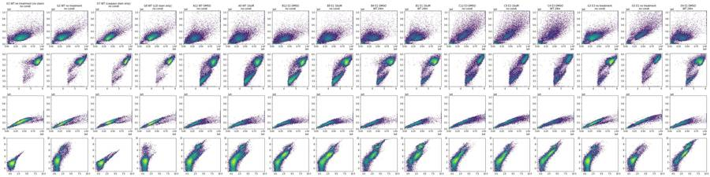
16
tool call · Bash
cd /task/work; cat > p2.py <<'EOF'
from load import *
import matplotlib; matplotlib.use('Agg'); import matplotlib.pyplot as plt
import sys
wells=sys.argv[2:]
def lg(x): return np.log10(np.clip(x,10,None))
n=len(wells); nc=6; nr=int(np.ceil(n/nc))
fig,ax=plt.subplots(nr,nc,figsize=(4*nc,4*nr),squeeze=False)
for a,w in zip(ax.flat,wells):
d=D[w]; s=lay.set_index('well').loc[w]
d=d[(d['FSC-A']>1e5)&(d['SSC-A']>3e4)]
a.hist2d(lg(d['BL1-A']),lg(d['BL2-A']),bins=200,range=[[1,6.1],[1,6.1]],norm=matplotlib.colors.LogNorm()); a.set_title(f"{w} {s['sample']} | {s.conditioned_media[:8]} n={len(d)}")
a.grid(alpha=.3); a.set_xlabel('log10 BL1-A'); a.set_ylabel('log10 BL2-A')
plt.tight_layout(); plt.savefig(sys.argv[1],dpi=55)
EOF
python3 p2.py p2a.png G1 G2 G7 G8 A12 A9 A4 A1 A8 A5 D12 D9
python3 p2.py p2b.png B12 B9 B4 B1 B8 B5 E12 E9 E4 E1 E8 E5
python3 p2.py p2c.png C12 C9 C4 C1 C8 C5 F12 F9 F4 F1 F8 F5 G3 G4 G5 G617
tool output
(Bash completed with no output)
18
tool call · Read
{
"file_path": "/task/work/p2a.png"
}19
tool output
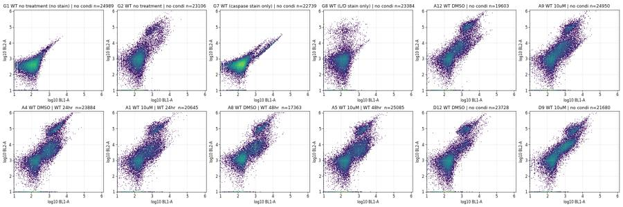
20
tool call · Read
{
"file_path": "/task/work/p2b.png"
}21
tool output
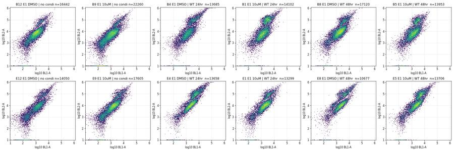
22
tool call · Read
{
"file_path": "/task/work/p2c.png"
}23
tool output
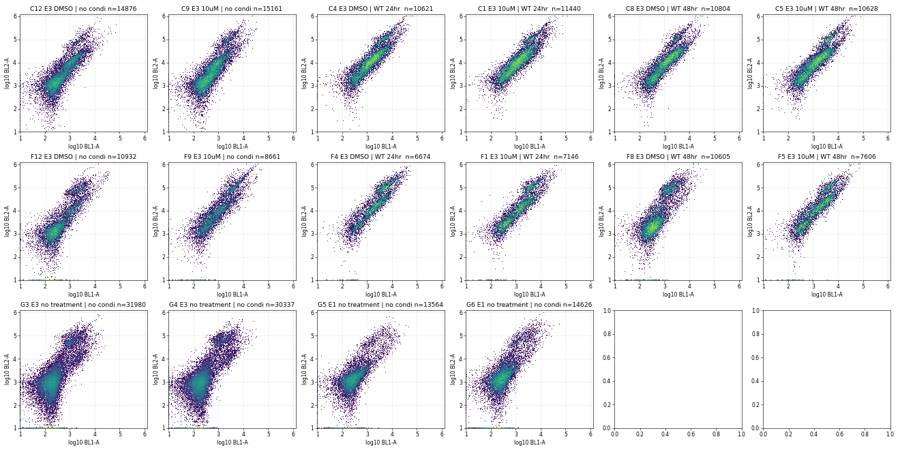
25
tool call · Bash
cd /task/work; cat > p3.py <<'EOF'
from load import *
import matplotlib; matplotlib.use('Agg'); import matplotlib.pyplot as plt
L=lay.set_index('well')
groups={'WT':[w for w in D if L.loc[w].cell_line=='WT' and w[0]!='G'],'E1':[w for w in D if L.loc[w].cell_line=='E1' and w[0]!='G'],'E3':[w for w in D if L.loc[w].cell_line=='E3' and w[0]!='G'],'G1G2G7G8':['G1','G2','G7','G8'],'G3G4':['G3','G4'],'G5G6':['G5','G6']}
fig,ax=plt.subplots(4,6,figsize=(30,20))
for j,(g,ws) in enumerate(groups.items()):
d=pd.concat([D[w] for w in ws])
ax[0,j].hist2d(d['FSC-A'],d['SSC-A'],bins=250,range=[[0,1.05e6],[0,1.05e6]],norm=matplotlib.colors.LogNorm()); ax[0,j].set_title(g)
ax[1,j].hist2d(np.log10(d['FSC-A'].clip(1e3)),np.log10(d['SSC-A'].clip(1e3)),bins=250,range=[[4,6.1],[3,6.1]],norm=matplotlib.colors.LogNorm())
ax[2,j].hist2d(d['FSC-A'],d['FSC-H'],bins=250,range=[[0,1.05e6],[0,6e5]],norm=matplotlib.colors.LogNorm())
ax[3,j].hist2d(d['FSC-A'],d['FSC-W'],bins=250,range=[[0,1.05e6],[0,1024]],norm=matplotlib.colors.LogNorm())
for a in ax[:,j]: a.grid(alpha=.3)
plt.tight_layout(); plt.savefig('p3.png',dpi=50)
for g,ws in groups.items():
d=pd.concat([D[w] for w in ws])
print(g, len(d), d[['FSC-A','SSC-A','FSC-H','SSC-H','FSC-W','SSC-W']].describe(percentiles=[.05,.25,.5,.75,.95]).round(0).to_string())
EOF
python3 p3.py26
tool output
WT 852122 FSC-A SSC-A FSC-H SSC-H FSC-W SSC-W count 852122.0 852122.0 852122.0 852122.0 852122.0 852122.0 mean 271057.0 172269.0 142919.0 96828.0 125.0 109.0 std 191956.0 166190.0 78201.0 83728.0 42.0 49.0 min -65536.0 -65536.0 25008.0 0.0 19.0 0.0 5% 30143.0 2748.0 29440.0 2834.0 61.0 30.0 25% 88859.0 15714.0 71832.0 13076.0 97.0 60.0 50% 278665.0 166243.0 151013.0 101381.0 126.0 124.0 75% 371742.0 238417.0 191440.0 137088.0 147.0 133.0 95% 586236.0 431141.0 270532.0 214778.0 179.0 167.0 max 1048575.0 1048575.0 656271.0 1048575.0 375.0 375.0 E1 728778 FSC-A SSC-A FSC-H SSC-H FSC-W SSC-W count 728778.0 728778.0 728778.0 728778.0 728778.0 728778.0 mean 259127.0 147793.0 137644.0 86134.0 125.0 104.0 std 189180.0 138263.0 76216.0 70421.0 42.0 50.0 min -65536.0 -65536.0 25000.0 0.0 18.0 0.0 5% 29600.0 2485.0 29013.0 2577.0 60.0 28.0 25% 72849.0 9831.0 61187.0 8378.0 93.0 50.0 50% 266597.0 148366.0 149172.0 92364.0 129.0 122.0 75% 378921.0 215008.0 193138.0 128560.0 151.0 132.0 95% 562174.0 364656.0 255149.0 197396.0 180.0 165.0 max 1048575.0 1048575.0 620408.0 1048575.0 375.0 375.0 E3 436819 FSC-A SSC-A FSC-H SSC-H FSC-W SSC-W count 436819.0 436819.0 436819.0 436819.0 436819.0 436819.0 mean 324103.0 278167.0 160744.0 152481.0 127.0 110.0 std 275526.0 293827.0 109364.0 161969.0 49.0 55.0 min -65536.0 -65536.0 25022.0 0.0 16.0 0.0 5% 29428.0 2967.0 28557.0 3020.0 60.0 31.0 25% 59843.0 11395.0 52773.0 9830.0 88.0 52.0 50% 301852.0 223975.0 157904.0 131297.0 129.0 128.0 75% 502337.0 427982.0 242432.0 229811.0 157.0 144.0 95% 867165.0 980319.0 347018.0 445378.0 198.0 184.0 max 1048575.0 1048575.0 614742.0 1048575.0 375.0 375.0 G1G2G7G8 99206 FSC-A SSC-A FSC-H SSC-H FSC-W SSC-W count 99206.0 99206.0 99206.0 99206.0 99206.0 99206.0 mean 383068.0 232466.0 194961.0 127164.0 143.0 132.0 std 168412.0 146140.0 70117.0 67873.0 34.0 30.0 min -65536.0 -65536.0 25130.0 0.0 26.0 0.0 5% 118090.0 97722.0 72952.0 63585.0 97.0 107.0 25% 296922.0 161999.0 155444.0 97868.0 127.0 125.0 50% 364649.0 202722.0 191219.0 117452.0 144.0 130.0 75% 447233.0 261762.0 234788.0 143167.0 154.0 136.0 95% 667847.0 453885.0 309014.0 211524.0 175.0 162.0 max 1048575.0 1048575.0 605164.0 1048575.0 375.0 375.0 G3G4 70094 FSC-A SSC-A FSC-H SSC-H FSC-W SSC-W count 70094.0 70094.0 70094.0 70094.0 70094.0 70094.0 mean 329072.0 209985.0 169516.0 115778.0 131.0 126.0 std 170594.0 131502.0 72096.0 55559.0 36.0 37.0 min -65536.0 -65536.0 25099.0 0.0 21.0 0.0 5% 42188.0 5969.0 38310.0 5654.0 76.0 42.0 25% 253134.0 152024.0 130326.0 93899.0 117.0 122.0 50% 318750.0 197974.0 169007.0 116710.0 128.0 128.0 75% 401216.0 254809.0 209626.0 141513.0 144.0 135.0 95% 599597.0 394647.0 286371.0 188514.0 168.0 162.0 max 1048575.0 1048575.0 678625.0 1048575.0 375.0 375.0 G5G6 32722 FSC-A SSC-A FSC-H SSC-H FSC-W SSC-W count 32722.0 32722.0 32722.0 32722.0 32722.0 32722.0 mean 463678.0 378820.0 229352.0 202996.0 145.0 133.0 std 271012.0 277009.0 114473.0 155341.0 47.0 41.0 min -65536.0 -65536.0 25076.0 0.0 25.0 0.0 5% 40670.0 9152.0 35954.0 8573.0 74.0 47.0 25% 304406.0 212132.0 153185.0 124253.0 125.0 127.0 50% 439572.0 314944.0 234638.0 172108.0 145.0 136.0 75% 609820.0 484978.0 302793.0 245784.0 160.0 147.0 95% 1048575.0 1048575.0 422274.0 492779.0 214.0 183.0 max 1048575.0 1048575.0 639513.0 1048575.0 375.0 375.0
28
thinking
Scatter, singlet and SYTOX/caspase gates are next, before counts. Two things look off so far: the BL1 label "AAV-GFP" is stale since BL1 is the caspase dye, and wells G3/G4 may be swapped with G5/G6, which I'm checking.
29
tool call · Read
{
"file_path": "/task/work/p3.png"
}30
tool output
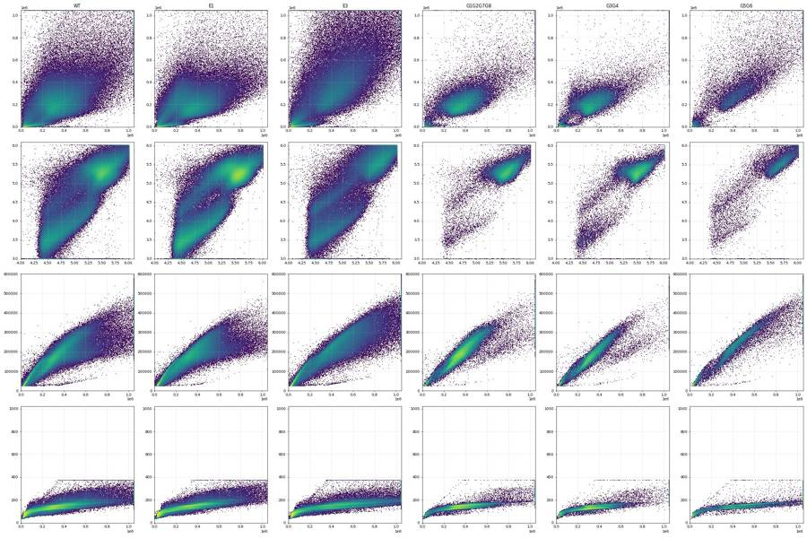
32
tool call · Bash
cd /task/work; cat > p4.py <<'EOF'
from load import *
import matplotlib; matplotlib.use('Agg'); import matplotlib.pyplot as plt
L=lay.set_index('well')
allw=list(D)
d=pd.concat([D[w].assign(well=w) for w in allw])
c=d[(d['FSC-A']>1e5)&(d['SSC-A']>5e4)]
r=c['FSC-H']/c['FSC-A']
print('ratio pct',np.percentile(r,[1,2,5,10,25,50,75,90,95,99]).round(3))
fig,ax=plt.subplots(2,4,figsize=(28,14))
ax[0,0].hist(r,bins=300,range=(0,1)); ax[0,0].set_title('FSC-H/FSC-A cells')
ax[0,1].hist2d(c['FSC-A'],r,bins=250,range=[[0,1.05e6],[0,1]],norm=matplotlib.colors.LogNorm()); ax[0,1].set_title('ratio vs FSC-A')
ax[0,2].hist2d(c['SSC-A'],c['SSC-H'],bins=250,range=[[0,1.05e6],[0,1.05e6]],norm=matplotlib.colors.LogNorm()); ax[0,2].set_title('SSC-A vs SSC-H')
ax[0,3].hist2d(c['FSC-H'],c['FSC-W'],bins=250,range=[[0,6e5],[0,400]],norm=matplotlib.colors.LogNorm()); ax[0,3].set_title('FSC-H vs FSC-W')
# fluorescence by scatter region
def lg(x): return np.log10(np.clip(x,10,None))
deb=d[(d['FSC-A']<1e5)]
mid=d[(d['FSC-A']>=1e5)&(d['SSC-A']<=5e4)]
for a,(nm,x) in zip(ax[1],[('debris FSC<1e5',deb),('FSC>1e5,SSC<5e4',mid),('cells',c),('cells ratio<0.4',c[r<0.4])]):
a.hist2d(lg(x['BL1-A']),lg(x['BL2-A']),bins=250,range=[[1,6.1],[1,6.1]],norm=matplotlib.colors.LogNorm()); a.set_title(f'{nm} n={len(x)}'); a.grid(alpha=.3)
plt.tight_layout(); plt.savefig('p4.png',dpi=50)
EOF
python3 p4.py33
tool output
ratio pct [0.264 0.291 0.342 0.394 0.466 0.524 0.573 0.621 0.66 0.773]
34
tool call · Read
{
"file_path": "/task/work/p4.png"
}35
tool output
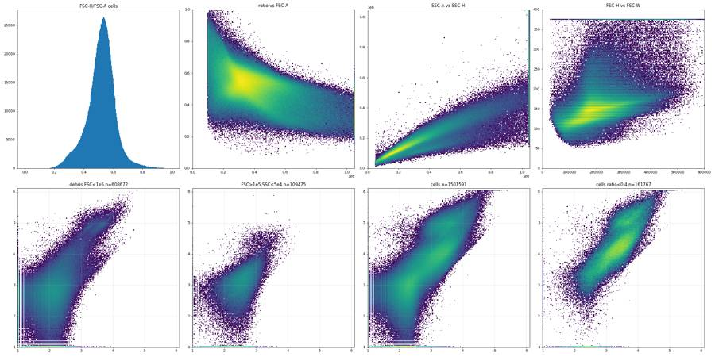
37
tool call · Bash
cd /task/work; cat > s1.py <<'EOF'
from load import *
for w in ['G1','G7','G8','G2']:
d=D[w]; c=d[(d['FSC-A']>1e5)&(d['SSC-A']>5e4)&(d['FSC-A']<1.04e6)&(d['SSC-A']<1.04e6)]
c=c[(c['FSC-H']/c['FSC-A']>0.4)]
print(w,len(c))
print(' BL1 pct',np.percentile(c['BL1-A'],[1,5,25,50,75,95,99,99.5,99.9]).round(0))
print(' BL2 pct',np.percentile(c['BL2-A'],[1,5,25,50,75,95,99,99.5,99.9]).round(0))
for lo,hi in [(0,300),(300,1000),(1000,3000),(3000,1e4),(1e4,1e6)]:
s=c[(c['BL1-A']>=lo)&(c['BL1-A']<hi)]
if len(s): print(f' BL1 {lo}-{hi}: n={len(s)} ({100*len(s)/len(c):.2f}%) med BL2={s["BL2-A"].median():.0f} med ratio BL2/BL1={np.median(s["BL2-A"]/s["BL1-A"]):.2f} BL2 q10-q90 {s["BL2-A"].quantile(.1):.0f}-{s["BL2-A"].quantile(.9):.0f}')
for lo,hi in [(0,1500),(1500,5000),(5000,2e4),(2e4,1e5),(1e5,2e6)]:
s=c[(c['BL2-A']>=lo)&(c['BL2-A']<hi)]
if len(s): print(f' BL2 {lo}-{hi}: n={len(s)} ({100*len(s)/len(c):.2f}%) med BL1={s["BL1-A"].median():.0f}')
EOF
python3 s1.py38
tool output
G1 23664 BL1 pct [-94. -40. 37. 91. 150. 247. 357. 429. 770.] BL2 pct [ 7. 98. 246. 364. 515. 899. 1605. 2019. 3627.] BL1 0-300: n=20202 (85.37%) med BL2=370 med ratio BL2/BL1=3.78 BL2 q10-q90 157-698 BL1 300-1000: n=470 (1.99%) med BL2=1342 med ratio BL2/BL1=3.57 BL2 q10-q90 492-2653 BL1 1000-3000: n=15 (0.06%) med BL2=4857 med ratio BL2/BL1=4.25 BL2 q10-q90 4088-10477 BL2 0-1500: n=23155 (97.85%) med BL1=90 BL2 1500-5000: n=294 (1.24%) med BL1=365 BL2 5000-20000.0: n=7 (0.03%) med BL1=1145 G7 21296 BL1 pct [-7.0000e+01 -1.2000e+01 7.2000e+01 1.3500e+02 2.0800e+02 5.3000e+02 6.1470e+03 9.0920e+03 1.4377e+04] BL2 pct [ 24. 117. 276. 404. 577. 1357. 6035. 8638. 13365.] BL1 0-300: n=17579 (82.55%) med BL2=385 med ratio BL2/BL1=3.09 BL2 q10-q90 172-686 BL1 300-1000: n=1577 (7.41%) med BL2=843 med ratio BL2/BL1=2.01 BL2 q10-q90 419-1704 BL1 1000-3000: n=315 (1.48%) med BL2=1976 med ratio BL2/BL1=1.06 BL2 q10-q90 1251-3046 BL1 3000-10000.0: n=357 (1.68%) med BL2=5093 med ratio BL2/BL1=0.94 BL2 q10-q90 3194-7988 BL1 10000.0-1000000.0: n=86 (0.40%) med BL2=10797 med ratio BL2/BL1=0.92 BL2 q10-q90 9392-16612 BL2 0-1500: n=20211 (94.91%) med BL1=130 BL2 1500-5000: n=661 (3.10%) med BL1=1755 BL2 5000-20000.0: n=270 (1.27%) med BL1=8299 BL2 20000.0-100000.0: n=4 (0.02%) med BL1=28826 G8 21990 BL1 pct [-84. -27. 51. 109. 168. 271. 409. 506. 813.] BL2 pct [-9.75000e+02 -5.20000e+02 8.90000e+01 5.36000e+02 1.08000e+03 4.52300e+03 6.17150e+04 8.48470e+04 1.52947e+05] BL1 0-300: n=19190 (87.27%) med BL2=531 med ratio BL2/BL1=4.62 BL2 q10-q90 -287-1850 BL1 300-1000: n=703 (3.20%) med BL2=1600 med ratio BL2/BL1=3.97 BL2 q10-q90 353-6174 BL1 1000-3000: n=11 (0.05%) med BL2=6060 med ratio BL2/BL1=4.17 BL2 q10-q90 5060-39669 BL2 0-1500: n=14132 (64.27%) med BL1=108 BL2 1500-5000: n=2273 (10.34%) med BL1=147 BL2 5000-20000.0: n=455 (2.07%) med BL1=129 BL2 20000.0-100000.0: n=502 (2.28%) med BL1=121 BL2 100000.0-2000000.0: n=68 (0.31%) med BL1=136 G2 21435 BL1 pct [-5.700e+01 1.000e+00 8.700e+01 1.550e+02 2.410e+02 1.053e+03 3.535e+03 4.444e+03 6.985e+03] BL2 pct [-1.19100e+03 -5.23000e+02 1.70000e+02 7.11000e+02 1.56800e+03 3.55690e+04 9.69680e+04 1.16366e+05 1.83662e+05] BL1 0-300: n=16789 (78.33%) med BL2=574 med ratio BL2/BL1=4.26 BL2 q10-q90 -316-2058 BL1 300-1000: n=2495 (11.64%) med BL2=2665 med ratio BL2/BL1=6.17 BL2 q10-q90 407-52575 BL1 1000-3000: n=789 (3.68%) med BL2=46716 med ratio BL2/BL1=22.39 BL2 q10-q90 5514-111959 BL1 3000-10000.0: n=322 (1.50%) med BL2=33977 med ratio BL2/BL1=7.31 BL2 q10-q90 10905-106044 BL1 10000.0-1000000.0: n=6 (0.03%) med BL2=65280 med ratio BL2/BL1=6.08 BL2 q10-q90 47604-262609 BL2 0-1500: n=11922 (55.62%) med BL1=137 BL2 1500-5000: n=3285 (15.33%) med BL1=198 BL2 5000-20000.0: n=964 (4.50%) med BL1=462 BL2 20000.0-100000.0: n=1158 (5.40%) med BL1=1011 BL2 100000.0-2000000.0: n=197 (0.92%) med BL1=1666
40
tool call · Bash
cd /task/work; python3 - <<'EOF' import flowkit as fk, inspect print(fk.__version__) print(inspect.signature(fk.Matrix.__init__)) print(inspect.signature(fk.GatingStrategy.add_comp_matrix)) print(inspect.signature(fk.GatingStrategy.add_transform)) print(inspect.signature(fk.GatingStrategy.add_gate)) print(inspect.signature(fk.Dimension.__init__)) print(inspect.signature(fk.gates.PolygonGate.__init__)) print(inspect.signature(fk.gates.RectangleGate.__init__)) print(inspect.signature(fk.transforms.LogicleTransform.__init__)) print(inspect.signature(fk.transforms.AsinhTransform.__init__)) print(inspect.signature(fk.GatingStrategy.gate_sample)) print(inspect.signature(fk.export_gatingml)) print(inspect.signature(fk.Sample.__init__)) EOF
41
tool output
1.2.3 (self, spill_data_or_file, detectors, fluorochromes=None, null_channels=None) (self, matrix_id, matrix) (self, transform_id, transform) (self, gate, gate_path, sample_id=None) (self, dimension_id, compensation_ref='uncompensated', transformation_ref=None, range_min=None, range_max=None) (self, gate_name, dimensions, vertices, use_complement=False) (self, gate_name, dimensions, use_complement=False) (self, param_t, param_w, param_m, param_a) (self, param_t, param_m, param_a) (self, sample, cache_events=False, verbose=False) (gating_strategy, file_handle, sample_id=None) (self, fcs_path_or_data, sample_id=None, filename_as_id=False, channel_labels=None, compensation=None, null_channel_list=None, ignore_offset_error=False, ignore_offset_discrepancy=False, use_header_offsets=False, cache_original_events=False, subsample=10000)
43
thinking
Caspase dye BL1 bleeds about 93% into the SYTOX detector BL2 at these voltages, so I'm building a compensation matrix from the single-stain wells G7 and G8 before setting the gates.
44
tool call · Bash
cd /task/work; cat > s2.py <<'EOF'
from load import *
import matplotlib; matplotlib.use('Agg'); import matplotlib.pyplot as plt
def cells(d):
c=d[(d['FSC-A']>1e5)&(d['SSC-A']>5e4)&(d['FSC-A']<1.04e6)&(d['SSC-A']<1.04e6)]
return c[(c['FSC-H']/c['FSC-A']>0.4)]
g7=cells(D['G7']); g8=cells(D['G8']); g1=cells(D['G1'])
# spill BL1->BL2 from G7: robust fit on BL1>2000
from scipy import stats
p=g7[g7['BL1-A']>2000]
neg=g7[g7['BL1-A']<300]
print('n pos',len(p))
print('theil-sen',stats.theilslopes(p['BL2-A'],p['BL1-A'])[:2])
print('median-based',(p['BL2-A'].median()-neg['BL2-A'].median())/(p['BL1-A'].median()-neg['BL1-A'].median()))
print('ols',np.polyfit(p['BL1-A'],p['BL2-A'],1))
# BL2->BL1 from G8
p8=g8[g8['BL2-A']>2e4]; n8=g8[g8['BL2-A']<1500]
print('n pos8',len(p8),'BL2->BL1',(p8['BL1-A'].median()-n8['BL1-A'].median())/(p8['BL2-A'].median()-n8['BL2-A'].median()))
print('theil-sen',stats.theilslopes(p8['BL1-A'],p8['BL2-A'])[:2])
# also H channels
print('H: ',(p['BL2-H'].median()-neg['BL2-H'].median())/(p['BL1-H'].median()-neg['BL1-H'].median()))
EOF
python3 s2.py45
tool output
n pos 560 theil-sen (0.8861899147961817, 408.96090670072226) median-based 0.9144494474007367 ols [ 0.88265555 421.02318002] n pos8 570 BL2->BL1 0.0003771213073538655 theil-sen (0.0003910225308018085, 103.12166529599835) H: 0.907191265060241
47
tool call · Bash
cd /task/work; cat > p5.py <<'EOF'
from load import *
import matplotlib; matplotlib.use('Agg'); import matplotlib.pyplot as plt
L=lay.set_index('well')
S=np.array([[1,0.89],[0.0004,1]]); Si=np.linalg.inv(S)
def cells(d):
c=d[(d['FSC-A']>1e5)&(d['SSC-A']>5e4)&(d['FSC-A']<1.04e6)&(d['SSC-A']<1.04e6)]
c=c[(c['FSC-H']/c['FSC-A']>0.4)].copy()
x=c[['BL1-A','BL2-A']].values@Si
c['c1']=x[:,0]; c['c2']=x[:,1]
return c
def t(x,c=100): return np.arcsinh(x/c)/np.log(10)
ticks=[-1e3,0,1e3,1e4,1e5,1e6]
import sys
rows=sys.argv[2]
fig,ax=plt.subplots(len(rows),12,figsize=(36,3*len(rows)),squeeze=False)
for i,r in enumerate(rows):
for j in range(12):
w=f'{r}{j+1}'; a=ax[i,j]
if w not in D: a.axis('off'); continue
c=cells(D[w])
a.hist2d(t(c.c1),t(c.c2),bins=120,range=[[t(-500),t(1e5)],[t(-5e3),t(1e6)]],norm=matplotlib.colors.LogNorm())
a.set_xticks(t(np.array([0,1e3,1e4,1e5])));a.set_xticklabels(['0','1e3','1e4','1e5'])
a.set_yticks(t(np.array(ticks)));a.set_yticklabels(['-1e3','0','1e3','1e4','1e5','1e6'])
a.grid(alpha=.4); a.set_title(f"{w} {L.loc[w,'sample'][:22]}|{L.loc[w,'conditioned_media'][:7]}",fontsize=9)
plt.tight_layout(); plt.savefig(sys.argv[1],dpi=50)
EOF
python3 p5.py p5a.png ABC; python3 p5.py p5b.png DEFG48
tool output
(Bash completed with no output)
49
tool call · Read
{
"file_path": "/task/work/p5a.png"
}50
tool output
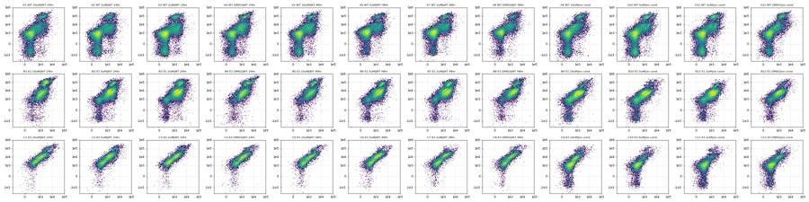
51
tool call · Read
{
"file_path": "/task/work/p5b.png"
}52
tool output
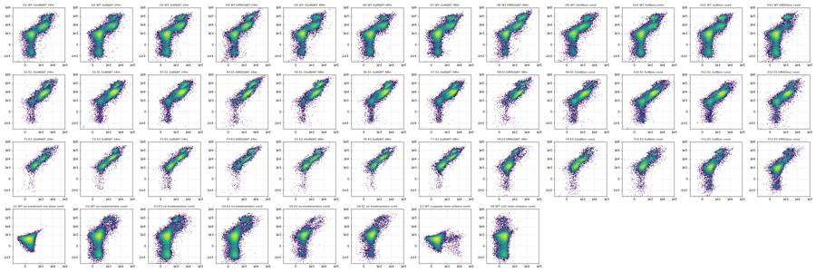
54
tool call · Bash
cd /task/work; cat > p6.py <<'EOF'
from load import *
import matplotlib; matplotlib.use('Agg'); import matplotlib.pyplot as plt
L=lay.set_index('well')
S=np.array([[1,0.89],[0.0004,1]]); Si=np.linalg.inv(S)
def cells(d):
c=d[(d['FSC-A']>1e5)&(d['SSC-A']>5e4)&(d['FSC-A']<1.04e6)&(d['SSC-A']<1.04e6)]
c=c[(c['FSC-H']/c['FSC-A']>0.4)].copy()
x=c[['BL1-A','BL2-A']].values@Si
c['c1']=x[:,0]; c['c2']=x[:,1]
return c
C={w:cells(D[w]) for w in D}
def t(x,c=100): return np.arcsinh(x/c)/np.log(10)
fig,ax=plt.subplots(3,4,figsize=(28,18))
bins=np.linspace(t(-300),t(1e5),150)
cols={'no conditioned media':'k','WT 24hr conditioned media':'tab:blue','WT 48hr conditioned media':'tab:green'}
for i,line in enumerate(['WT','E1','E3']):
for j,dose in enumerate(['DMSO','2uM','5uM','10uM']):
a=ax[i,j]
for w in D:
r=L.loc[w]
if r.cell_line==line and r.camptothecin==dose:
c=C[w]; c=c[c.c2<3e4]
a.hist(t(c.c1),bins=bins,histtype='step',density=True,color=cols[r.conditioned_media],label=w+' '+r.conditioned_media[:7])
for w,cc in [('G8','r'),('G7','m')]+( [('G2','orange')] if line=='WT' else []):
c=C[w]; c=c[c.c2<3e4]
a.hist(t(c.c1),bins=bins,histtype='step',density=True,color=cc,ls=':',label=w)
a.set_xticks(t(np.array([0,300,1e3,3e3,1e4,1e5])));a.set_xticklabels(['0','300','1e3','3e3','1e4','1e5']); a.grid(alpha=.4)
a.set_title(f'{line} {dose} BL1 comp (BL2c<3e4)'); a.legend(fontsize=8)
plt.tight_layout(); plt.savefig('p6.png',dpi=50)
# ratio valley
allc=pd.concat(C.values())
h=allc[(allc.c2>5e3)&(allc.c1>300)]
fig,ax=plt.subplots(1,3,figsize=(24,7))
ax[0].hist(np.log10(h.c2/h.c1),bins=200); ax[0].set_title('log10(BL2c/BL1c), BL2c>5e3'); ax[0].grid()
ax[1].hist(np.log10(allc.c2.clip(100)),bins=200); ax[1].set_title('log10 BL2c all'); ax[1].grid()
ax[2].hist2d(t(allc.c1),t(allc.c2),bins=250,range=[[t(-500),t(1e5)],[t(-5e3),t(1e6)]],norm=matplotlib.colors.LogNorm())
ax[2].set_xticks(t(np.array([0,300,1e3,3e3,1e4,1e5])));ax[2].set_xticklabels(['0','300','1e3','3e3','1e4','1e5'])
ax[2].set_yticks(t(np.array([-1e3,0,1e3,1e4,3e4,1e5,1e6])));ax[2].set_yticklabels(['-1e3','0','1e3','1e4','3e4','1e5','1e6']); ax[2].grid(alpha=.5)
plt.tight_layout(); plt.savefig('p6b.png',dpi=55)
EOF
python3 p6.py55
tool output
(Bash completed with no output)
56
tool call · Read
{
"file_path": "/task/work/p6.png"
}57
tool output
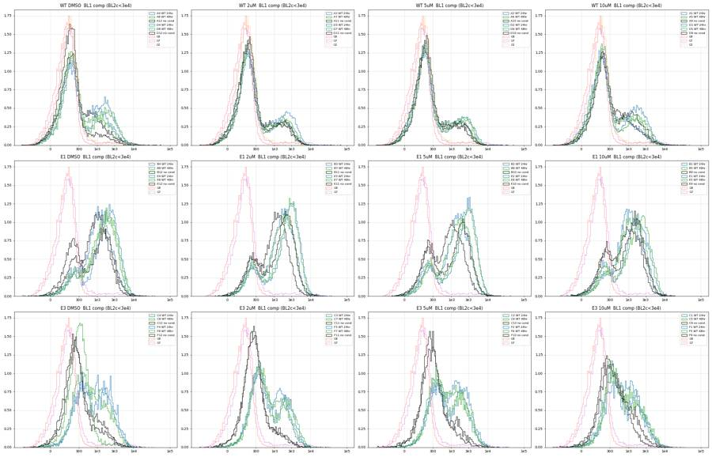
58
tool call · Read
{
"file_path": "/task/work/p6b.png"
}59
tool output
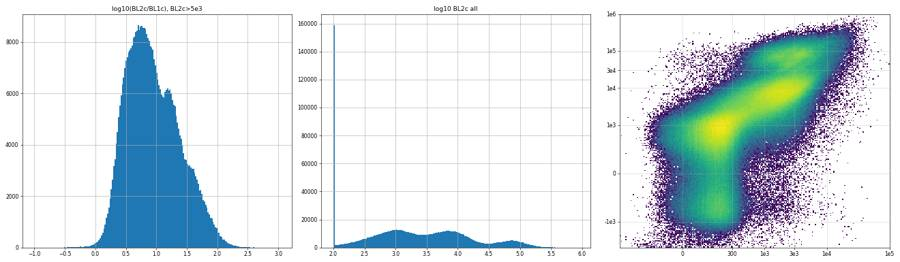
61
tool call · Bash
cd /task/work; cat > s3.py <<'EOF'
from load import *
L=lay.set_index('well')
rows=[]
for w,d in D.items():
c=d[(d['FSC-A']>1e5)&(d['SSC-A']>5e4)]
ok=c[(c['FSC-A']<1.04e6)&(c['SSC-A']<1.04e6)]
neg=ok[(ok['BL1-A']<600)]
rows.append(dict(well=w,line=L.loc[w,'cell_line'],cpt=L.loc[w,'camptothecin'],cm=L.loc[w,'conditioned_media'][:7],n=len(d),ncell=len(c),pct_cell=100*len(c)/len(d),
fsc=c['FSC-A'].median(),ssc=c['SSC-A'].median(),ssc_fsc=(c['SSC-A']/c['FSC-A']).median(),
sat=100*((c['FSC-A']>=1.04e6)|(c['SSC-A']>=1.04e6)).mean(), ssc_q90=c['SSC-A'].quantile(.9), fscw=c['FSC-W'].median(), sscw=c['SSC-W'].median(),
bl1neg=neg['BL1-A'].median(), fscH=c['FSC-H'].median()))
o=pd.DataFrame(rows).round(2)
pd.set_option('display.width',250); pd.set_option('display.max_rows',200)
print(o.sort_values(['line','cm','cpt']).to_string())
print(o[o.well.str[0]!='G'].groupby('line')[['pct_cell','fsc','ssc','ssc_fsc','sat','ssc_q90','fscw','bl1neg']].agg(['mean','std','min','max']).round(2).T.to_string())
o.to_csv('scatter_sig.csv',index=False)
EOF
python3 s3.py62
tool output
well line cpt cm n ncell pct_cell fsc ssc ssc_fsc sat ssc_q90 fscw sscw bl1neg fscH 12 B1 E1 10uM WT 24hr 18757 14043 74.87 341600.0 218567.0 0.65 0.78 384402.6 143.0 129.0 314.5 177516.0 48 E1 E1 10uM WT 24hr 18885 13232 70.07 361514.0 204031.0 0.56 0.88 355100.1 145.0 131.0 216.0 184248.0 14 B3 E1 2uM WT 24hr 40067 26912 67.17 360787.5 181680.5 0.48 0.46 297748.7 148.0 129.0 242.0 186547.5 50 E3 E1 2uM WT 24hr 39231 25945 66.13 349513.0 185787.0 0.51 0.64 308120.4 145.0 129.0 245.0 180352.0 13 B2 E1 5uM WT 24hr 32477 22955 70.68 358979.0 190729.0 0.51 0.60 321362.4 148.0 129.0 227.0 185963.0 49 E2 E1 5uM WT 24hr 35801 24267 67.78 352359.0 189156.0 0.52 0.68 323636.2 145.0 129.0 236.0 183181.0 15 B4 E1 DMSO WT 24hr 19965 13621 68.22 354033.0 212808.0 0.62 1.80 394879.0 147.0 131.0 280.0 181372.0 51 E4 E1 DMSO WT 24hr 18739 13601 72.58 350210.0 221452.0 0.65 1.65 413892.0 145.0 132.0 235.0 177314.0 16 B5 E1 10uM WT 48hr 17852 13911 77.92 334299.0 210931.0 0.63 0.34 348071.0 142.0 128.0 294.0 176224.0 52 E5 E1 10uM WT 48hr 18850 13656 72.45 328567.5 211049.0 0.65 1.19 385805.0 145.0 130.0 228.0 170315.5 18 B7 E1 2uM WT 48hr 35417 24183 68.28 348841.0 193250.0 0.53 0.56 323936.8 144.0 128.0 254.0 183468.0 54 E7 E1 2uM WT 48hr 38310 24482 63.90 342251.5 185133.0 0.52 0.58 302662.4 145.0 128.0 253.0 179170.5 17 B6 E1 5uM WT 48hr 31705 22645 71.42 350445.0 194368.0 0.54 0.60 320151.6 147.0 128.0 244.5 183075.0 53 E6 E1 5uM WT 48hr 32342 22081 68.27 331382.0 196074.0 0.57 0.60 326504.0 143.0 128.0 251.0 175552.0 19 B8 E1 DMSO WT 48hr 26222 17030 64.95 365973.0 195025.0 0.53 0.91 350798.1 150.0 130.0 259.0 186417.0 55 E8 E1 DMSO WT 48hr 15706 10624 67.64 338117.5 210826.0 0.65 2.24 406829.9 147.0 131.0 269.0 173652.0 20 B9 E1 10uM no cond 34411 22059 64.10 344136.0 193342.0 0.55 1.05 342734.2 146.0 128.0 247.0 181105.0 56 E9 E1 10uM no cond 29597 17452 58.97 340222.0 191253.5 0.56 2.00 358502.5 147.0 129.0 236.0 176406.0 22 B11 E1 2uM no cond 41005 24202 59.02 344399.5 171952.5 0.48 0.82 303819.4 146.0 127.0 254.0 182479.5 58 E11 E1 2uM no cond 43387 24186 55.74 332275.5 171690.0 0.51 0.91 306725.0 145.0 127.0 245.0 176445.5 21 B10 E1 5uM no cond 40098 25674 64.03 345739.5 187322.0 0.53 1.08 333250.3 147.0 128.0 239.0 182476.5 57 E10 E1 5uM no cond 41604 25351 60.93 335681.0 186266.0 0.55 1.23 330488.0 145.0 128.0 224.0 177428.0 23 B12 E1 DMSO no cond 31680 16253 51.30 366924.0 182886.0 0.49 1.56 345020.0 148.0 130.0 267.0 186056.0 59 E12 E1 DMSO no cond 26670 13909 52.15 324560.0 187225.0 0.56 2.07 358989.2 141.0 129.0 202.0 171360.0 76 G5 E1 no treatment no cond 15961 13499 84.57 475933.0 342788.0 0.72 9.10 884308.4 151.0 138.0 219.0 250780.0 77 G6 E1 no treatment no cond 16761 14581 86.99 483070.0 352061.0 0.73 10.82 922043.0 149.0 139.0 227.0 255207.0 24 C1 E3 10uM WT 24hr 17681 11262 63.70 517964.5 373566.5 0.73 8.17 836439.4 159.0 143.0 325.0 249322.0 60 F1 E3 10uM WT 24hr 11614 6999 60.26 491164.0 378536.0 0.78 7.94 864197.4 155.0 141.0 301.0 246155.0 26 C3 E3 2uM WT 24hr 21098 13549 64.22 511033.0 393268.0 0.78 8.54 867241.8 157.0 143.0 306.0 250170.0 62 F3 E3 2uM WT 24hr 19551 10830 55.39 424580.5 382449.5 0.88 6.83 863133.9 147.0 139.0 313.0 212700.0 25 C2 E3 5uM WT 24hr 25455 13772 54.10 464570.0 379579.0 0.83 7.80 886582.1 154.0 142.0 325.0 218923.5 61 F2 E3 5uM WT 24hr 18268 9163 50.16 435344.0 363458.0 0.84 7.45 874460.2 152.0 140.0 308.0 210908.0 27 C4 E3 DMSO WT 24hr 18113 10453 57.71 452243.0 377587.0 0.83 8.15 903412.2 156.0 142.0 314.0 210173.0 63 F4 E3 DMSO WT 24hr 11834 6559 55.43 421643.0 391220.0 0.92 9.07 950643.8 149.0 141.0 321.0 201895.0 28 C5 E3 10uM WT 48hr 18729 10414 55.60 459661.5 401726.0 0.87 8.44 926566.6 157.0 143.0 319.0 212235.5 64 F5 E3 10uM WT 48hr 14031 7449 53.09 437558.0 393035.0 0.88 7.46 884000.6 152.0 141.0 308.0 207282.0 30 C7 E3 2uM WT 48hr 22874 12939 56.57 456682.0 396748.0 0.86 7.42 873175.0 153.0 141.0 310.0 221095.0 66 F7 E3 2uM WT 48hr 19376 10553 54.46 428540.0 409789.0 0.92 7.36 877114.4 149.0 140.0 328.0 212018.0 29 C6 E3 5uM WT 48hr 21716 12059 55.53 476632.0 397942.0 0.84 7.96 895355.2 157.0 143.0 323.0 221623.0 65 F6 E3 5uM WT 48hr 14662 7600 51.83 442065.0 395388.0 0.89 7.18 868421.3 152.0 141.0 316.0 212230.5 31 C8 E3 DMSO WT 48hr 18604 10614 57.05 467952.0 388505.0 0.84 7.49 890362.3 156.0 142.0 312.0 215947.5 67 F8 E3 DMSO WT 48hr 13717 10562 77.00 460370.0 487181.5 1.00 12.53 1048575.0 146.0 141.0 283.0 240550.5 32 C9 E3 1 … [6,842 more characters not shown]
64
thinking
Gates are nearly done with compensation at 0.89, but G5/G6 labelled E1 look like E3 while G3/G4 labelled E3 don't, so those labels are doubtful. Running time-course QC on every well for clogs and dry runs next.
65
tool call · Bash
cd /task/work; cat > s4.py <<'EOF'
from load import *
L=lay.set_index('well')
rows=[]
nb=16
for w,d in D.items():
t=d['Time'].values
edges=np.linspace(0,t.max()+1,nb+1)
h,_=np.histogram(t,edges)
cellmask=(d['FSC-A']>1e5)&(d['SSC-A']>5e4)
hc,_=np.histogram(t[cellmask],edges)
idx=np.digitize(t,edges)-1
fscm=[np.median(d['FSC-A'].values[cellmask&(idx==i)]) if (cellmask&(idx==i)).sum()>20 else np.nan for i in range(nb)]
bl1m=[np.median(d['BL1-A'].values[cellmask&(idx==i)]) if (cellmask&(idx==i)).sum()>20 else np.nan for i in range(nb)]
med=np.median(h)
gaps=np.diff(np.sort(t))
rows.append(dict(well=w,n=len(d),tmin=t.min(),tmax=t.max(),rate_med=med,rate_min=h.min()/med,rate_max=h.max()/med,first=h[0]/med,last=h[-1]/med,last2=h[-2]/med,
cv=h.std()/h.mean(), maxgap_ms=gaps.max(), cellfrac_first=hc[0]/max(h[0],1),cellfrac_last=hc[-1]/max(h[-1],1),cellfrac_min=np.min(hc/np.maximum(h,1)),cellfrac_max=np.max(hc/np.maximum(h,1)),
fsc_drift=np.nanmax(fscm)/np.nanmin(fscm), bl1_drift=np.nanmax(bl1m)/np.nanmin(bl1m), timemono=bool(np.all(np.diff(t)>=0))))
o=pd.DataFrame(rows).round(2)
pd.set_option('display.width',250); pd.set_option('display.max_rows',200)
print(o.to_string())
o.to_csv('time_qc.csv',index=False)
EOF
python3 s4.py66
tool output
well n tmin tmax rate_med rate_min rate_max first last last2 cv maxgap_ms cellfrac_first cellfrac_last cellfrac_min cellfrac_max fsc_drift bl1_drift timemono 0 A1 31328 14.0 15980.0 1967.0 0.79 1.23 0.90 0.79 0.80 0.13 10.0 0.62 0.63 0.60 0.71 1.06 1.24 True 1 A2 40169 15.0 16706.0 2464.5 0.83 1.28 0.88 0.87 0.88 0.14 6.0 0.68 0.72 0.67 0.74 1.08 1.12 True 2 A3 47337 15.0 16851.0 2915.5 0.83 1.29 0.90 0.83 0.88 0.14 7.0 0.61 0.63 0.61 0.73 1.08 1.18 True 3 A4 33079 14.0 16632.0 2011.0 0.79 1.36 0.79 0.93 0.90 0.14 12.0 0.66 0.71 0.66 0.76 1.07 1.44 True 4 A5 34963 15.0 16749.0 2155.5 0.80 1.35 0.80 0.86 0.86 0.16 35.0 0.67 0.70 0.66 0.76 1.08 1.20 True 5 A6 33431 14.0 15660.0 1986.0 0.86 1.32 0.87 0.86 0.89 0.15 6.0 0.71 0.74 0.70 0.80 1.06 1.13 True 6 A7 36445 15.0 16841.0 2246.0 0.73 1.29 0.73 0.80 0.92 0.17 5.0 0.70 0.73 0.70 0.80 1.07 1.15 True 7 A8 22867 15.0 15832.0 1409.5 0.70 1.32 0.71 0.70 0.86 0.18 9.0 0.73 0.70 0.70 0.79 1.08 1.82 True 8 A9 40034 14.0 16671.0 2459.0 0.78 1.37 0.88 0.78 0.88 0.15 8.0 0.56 0.58 0.56 0.69 1.10 1.24 True 9 A10 42298 14.0 16647.0 2598.5 0.72 1.35 0.81 0.72 0.92 0.17 13.0 0.60 0.61 0.60 0.76 1.08 1.15 True 10 A11 43376 14.0 16621.0 2718.0 0.59 1.16 0.94 0.59 1.12 0.13 12.0 0.61 0.58 0.58 0.71 1.09 1.17 True 11 A12 30724 14.0 15960.0 1950.5 0.81 1.15 0.93 0.82 0.81 0.09 17.0 0.59 0.64 0.59 0.66 1.07 1.22 True 12 B1 18757 14.0 16702.0 1193.5 0.33 1.31 0.80 0.33 1.05 0.22 29.0 0.70 0.59 0.59 0.81 1.10 1.22 True 13 B2 32477 14.0 15827.0 1967.0 0.74 1.35 0.74 0.87 0.84 0.17 5.0 0.66 0.71 0.66 0.77 1.06 1.14 True 14 B3 40067 14.0 16738.0 2388.0 0.77 1.33 0.90 0.77 0.94 0.15 10.0 0.62 0.63 0.62 0.73 1.06 1.11 True 15 B4 19965 15.0 15884.0 1169.5 0.65 1.47 0.82 0.68 0.65 0.22 22.0 0.62 0.68 0.62 0.74 1.12 1.31 True 16 B5 17852 14.0 16773.0 1075.0 0.52 1.45 0.88 0.52 0.98 0.20 41.0 0.73 0.70 0.70 0.83 1.10 1.20 True 17 B6 31705 14.0 16655.0 1967.5 0.32 1.37 0.92 0.32 1.02 0.23 38.0 0.68 0.49 0.49 0.76 1.06 1.13 True 18 B7 35417 14.0 15885.0 2104.0 0.79 1.35 0.85 1.00 0.79 0.16 5.0 0.62 0.67 0.62 0.75 1.07 1.11 True 19 B8 26222 14.0 16718.0 1619.0 0.60 1.27 0.93 0.60 1.07 0.14 22.0 0.61 0.59 0.59 0.70 1.07 1.18 True 20 B9 34411 14.0 15809.0 2055.5 0.85 1.31 0.90 1.04 0.85 0.13 7.0 0.61 0.65 0.59 0.69 1.07 1.17 True 21 B10 40098 14.0 16698.0 2488.0 0.21 1.32 0.92 0.21 1.09 0.24 29.0 0.60 0.28 0.28 0.70 1.07 1.40 True 22 B11 41005 14.0 16829.0 2599.5 0.29 1.22 0.94 0.29 1.00 0.21 23.0 0.57 0.32 0.32 0.66 1.06 1.09 True 23 B12 31680 15.0 15942.0 1914.5 0.85 1.28 0.95 0.96 0.85 0.11 5.0 0.48 0.52 0.44 0.57 1.07 1.24 True 24 C1 17681 15.0 16524.0 1140.0 0.46 1.31 0.74 0.46 0.69 0.23 27.0 0.57 0.61 0.57 0.71 1.15 1.22 True 25 C2 25455 14.0 16788.0 1536.0 0.76 1.42 0.82 0.76 0.80 0.17 9.0 0.46 0.48 0.46 0.62 1.06 1.27 True 26 C3 21098 14.0 15902.0 1233.0 0.77 1.51 0.77 0.89 0.87 0.21 10.0 0.55 0.65 0.55 0.73 1.09 1.29 True 27 C4 18113 14.0 16821.0 1039.0 0.90 1.53 0.90 0.91 0.93 0.18 10.0 0.52 0.58 0.52 0.67 1.12 1.35 True 28 C5 18729 15.0 16826.0 1195.0 0.18 1.34 0.96 0.18 0.94 0.26 93.0 0.51 0.16 0.16 0.65 1.10 1.34 True 29 C6 21716 14.0 16470.0 1363.0 0.25 1.36 0.91 0.25 1.00 0.24 46.0 0.50 0.22 0.22 0.63 1.08 1.46 True 30 C7 22874 15.0 16593.0 1406.5 0.25 1.40 0.87 0.25 0.89 0.25 26.0 0.52 0.21 0.21 0.67 1.08 … [9,227 more characters not shown]
68
tool call · Bash
cd /task/work; cat > s5.py <<'EOF'
from load import *
import matplotlib; matplotlib.use('Agg'); import matplotlib.pyplot as plt
edges=np.arange(0,17250,250)
fig,ax=plt.subplots(7,12,figsize=(36,18))
rows=[]
for a in ax.flat: a.axis('off')
for w,d in D.items():
i='ABCDEFG'.index(w[0]); j=int(w[1:])-1; a=ax[i,j]; a.axis('on')
t=d['Time'].values; cm=((d['FSC-A']>1e5)&(d['SSC-A']>5e4)).values
h,_=np.histogram(t,edges); hc,_=np.histogram(t[cm],edges)
a.step(edges[:-1],h,where='post',color='k'); a.step(edges[:-1],hc,where='post',color='tab:red'); a.set_title(w,fontsize=9); a.set_ylim(0,None)
med=np.median(h[4:48]); medc=np.median(hc[4:48])
# find time after which cell rate is < 50% median persistently
low=np.where(hc<0.5*medc)[0]
tdrop=None
k=len(h)-1
# last non-empty bin
lastbin=int(t.max()//250)
kk=lastbin
while kk>=0 and hc[kk]<0.5*medc*(1 if kk<lastbin else (t.max()-edges[kk])/250): kk-=1
tdrop=edges[kk+1] if kk<lastbin else None
n_after=int((t>=tdrop).sum()) if tdrop is not None else 0
c_after=int(cm[t>=tdrop].sum()) if tdrop is not None else 0
rows.append(dict(well=w,tmax=t.max(),tdrop=tdrop,n_after=n_after,cells_after=c_after,pct_after=100*n_after/len(t), early_low=[int(edges[x]) for x in low if x<kk]))
plt.tight_layout(); plt.savefig('s5.png',dpi=45)
o=pd.DataFrame(rows); pd.set_option('display.width',250); pd.set_option('display.max_rows',200)
print(o[(o.tdrop.notna())|(o.early_low.str.len()>0)].to_string())
o.to_csv('tail_qc.csv',index=False)
EOF
python3 s5.py69
tool output
well tmax tdrop n_after cells_after pct_after early_low 1 A2 16706.0 16500.0 185 100 0.460554 [] 2 A3 16851.0 16500.0 419 181 0.885143 [] 4 A5 16749.0 16500.0 158 79 0.451906 [] 8 A9 16671.0 16250.0 437 165 1.091572 [] 9 A10 16647.0 16250.0 247 56 0.583952 [] 10 A11 16621.0 16000.0 483 175 1.113519 [] 12 B1 16702.0 16000.0 129 49 0.687743 [] 14 B3 16738.0 16250.0 371 150 0.925949 [] 15 B4 15884.0 NaN 0 0 0.000000 [14500] 16 B5 16773.0 16250.0 104 43 0.582568 [] 17 B6 16655.0 15750.0 383 143 1.208011 [] 19 B8 16718.0 16250.0 164 42 0.625429 [] 21 B10 16698.0 15750.0 386 84 0.962642 [] 22 B11 16829.0 16000.0 372 57 0.907206 [] 24 C1 16524.0 16000.0 101 40 0.571235 [] 28 C5 16826.0 15750.0 231 45 1.233381 [] 29 C6 16470.0 15500.0 281 47 1.293977 [] 30 C7 16593.0 15500.0 418 105 1.827402 [] 31 C8 16603.0 15750.0 159 23 0.854655 [] 32 C9 15839.0 15750.0 66 33 0.287431 [] 33 C10 16533.0 15750.0 104 8 0.658478 [] 34 C11 16477.0 15500.0 156 54 0.785736 [] 35 C12 16726.0 16500.0 101 34 0.437154 [] 36 D1 16622.0 15500.0 402 124 1.341565 [] 39 D4 16797.0 15500.0 222 53 0.850444 [] 40 D5 16767.0 16500.0 176 58 0.620855 [] 41 D6 16508.0 15250.0 513 219 1.589810 [] 42 D7 16373.0 15000.0 634 282 1.668289 [14000, 14250] 43 D8 16813.0 16500.0 139 36 0.500234 [15000] 44 D9 16725.0 15250.0 465 95 1.306730 [] 45 D10 16159.0 15750.0 392 179 1.020169 [] 46 D11 16335.0 15250.0 450 110 1.038805 [] 47 D12 16766.0 16500.0 74 24 0.255181 [] 48 E1 16730.0 16250.0 140 56 0.741329 [] 49 E2 16504.0 15250.0 544 172 1.519511 [] 50 E3 16094.0 15000.0 329 54 0.838623 [] 51 E4 15961.0 15000.0 148 61 0.789797 [] 52 E5 16600.0 16000.0 178 68 0.944297 [] 58 E11 16688.0 16500.0 196 53 0.451748 [] 60 F1 16692.0 16500.0 72 33 0.619941 [] 64 F5 16700.0 16500.0 69 16 0.491768 [] 66 F7 16718.0 16000.0 300 88 1.548307 [] 67 F8 16807.0 NaN 0 0 0.000000 [15250, 15750, 16000] 69 F10 16822.0 16000.0 206 61 1.226482 [] 72 G1 16634.0 16250.0 128 121 0.488363 [] 73 G2 15903.0 NaN 0 0 0.000000 [7500] 75 G4 16596.0 15750.0 233 154 0.681107 [14750] 76 G5 16420.0 15750.0 109 70 0.682915 [] 78 G7 16317.0 16000.0 34 21 0.141555 []
70
tool call · Read
{
"file_path": "/task/work/s5.png"
}71
tool output
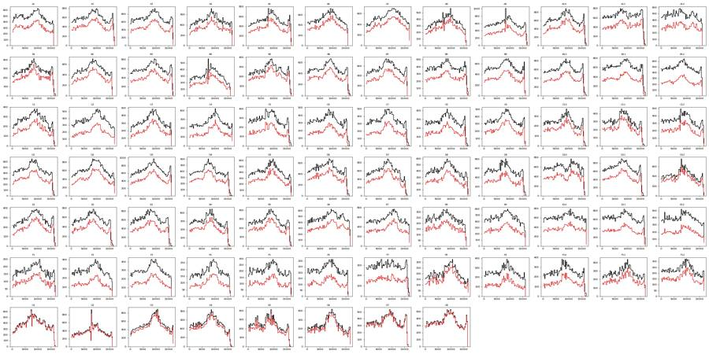
73
tool call · Bash
cd /task/work; cat > p7.py <<'EOF'
from load import *
import matplotlib; matplotlib.use('Agg'); import matplotlib.pyplot as plt
L=lay.set_index('well')
groups={'WT plate':[w for w in D if L.loc[w].cell_line=='WT' and w[0]!='G'],'E1 plate':[w for w in D if L.loc[w].cell_line=='E1' and w[0]!='G'],'E3 plate':[w for w in D if L.loc[w].cell_line=='E3' and w[0]!='G'],'G row':[w for w in D if w[0]=='G']}
fig,ax=plt.subplots(3,4,figsize=(28,21))
S=np.array([[1,0.89],[0.0004,1]]); Si=np.linalg.inv(S)
for j,(g,ws) in enumerate(groups.items()):
d=pd.concat([D[w] for w in ws])
ax[0,j].hist2d(d['FSC-A'],d['SSC-A'],bins=200,range=[[0,5e5],[0,4e5]],norm=matplotlib.colors.LogNorm()); ax[0,j].set_title(g)
ax[1,j].hist2d(d['FSC-A'],d['SSC-A'],bins=200,range=[[0,5e5],[0,4e5]]);
x=d[['BL1-A','BL2-A']].values@Si
# mean log caspase by scatter bin
import scipy.stats as st
pos=(x[:,0]>600).astype(float)
stat,xe,ye,_=st.binned_statistic_2d(d['FSC-A'],d['SSC-A'],pos,bins=80,range=[[0,1.05e6],[0,1.05e6]])
cnt,_,_=np.histogram2d(d['FSC-A'],d['SSC-A'],bins=80,range=[[0,1.05e6],[0,1.05e6]])
stat[cnt<20]=np.nan
im=ax[2,j].imshow(stat.T,origin='lower',extent=[0,1.05e6,0,1.05e6],vmin=0,vmax=1,cmap='coolwarm',aspect='auto'); ax[2,j].set_title('frac BL1c>600')
for a in ax[:,j]: a.grid(alpha=.4)
plt.tight_layout(); plt.savefig('p7.png',dpi=50)
EOF
python3 p7.py74
tool output
(Bash completed with no output)
75
tool call · Read
{
"file_path": "/task/work/p7.png"
}76
tool output
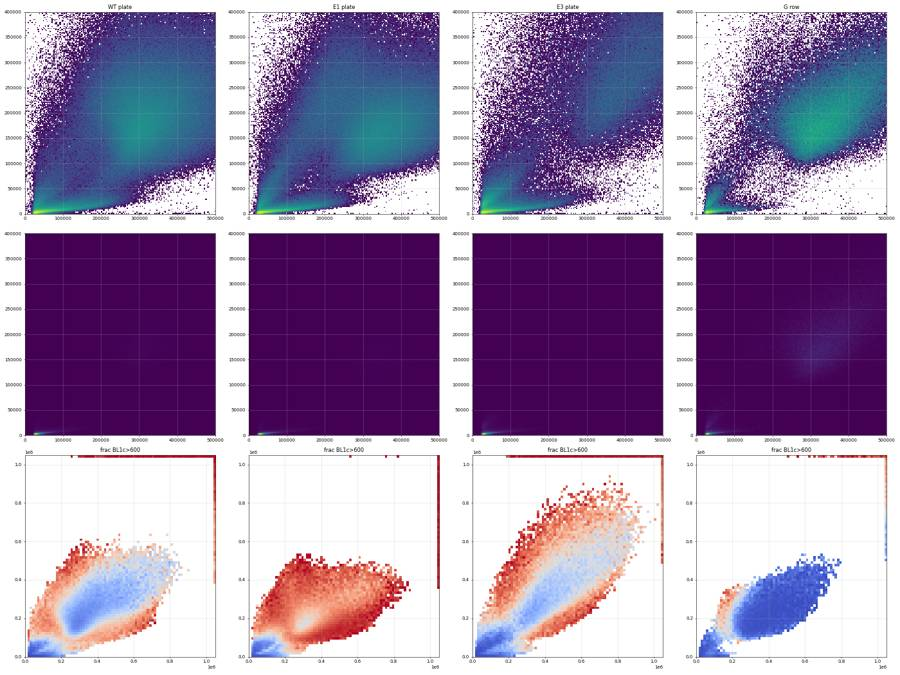
78
tool call · Bash
cd /task/work; cat > p8.py <<'EOF'
from load import *
import matplotlib; matplotlib.use('Agg'); import matplotlib.pyplot as plt
from scipy.ndimage import gaussian_filter1d
L=lay.set_index('well')
S=np.array([[1,0.89],[0.0004,1]]); Si=np.linalg.inv(S)
def cells(d):
c=d[(d['FSC-A']>1e5)&(d['SSC-A']>5e4)&(d['FSC-A']<1.04e6)&(d['SSC-A']<1.04e6)].copy()
x=c[['BL1-A','BL2-A']].values@Si
c['c1']=x[:,0]; c['c2']=x[:,1]; c['r']=c['FSC-H']/c['FSC-A']
return c
C={w:cells(D[w]) for w in D}
def t(x,c=100): return np.arcsinh(x/c)/np.log(10)
groups={'WT plate':[w for w in D if L.loc[w].cell_line=='WT' and w[0]!='G'],'E1 CM':[w for w in D if L.loc[w].cell_line=='E1' and w[0]!='G' and int(w[1:])<=8],'E1 noCM':[w for w in D if L.loc[w].cell_line=='E1' and w[0]!='G' and int(w[1:])>8],'E3 CM':[w for w in D if L.loc[w].cell_line=='E3' and w[0]!='G' and int(w[1:])<=8],'E3 noCM':[w for w in D if L.loc[w].cell_line=='E3' and w[0]!='G' and int(w[1:])>8],'G2-G6':['G2','G3','G4','G5','G6']}
fig,ax=plt.subplots(3,6,figsize=(42,21))
for j,(g,ws) in enumerate(groups.items()):
c=pd.concat([C[w] for w in ws])
a=ax[0,j]; a.hist2d(t(c.c1),t(c.c2),bins=220,range=[[t(-500),t(1e5)],[t(-5e3),t(1e6)]],norm=matplotlib.colors.LogNorm())
a.set_xticks(t(np.array([0,300,600,1e3,3e3,1e4,3e4,1e5])));a.set_xticklabels(['0','300','600','1e3','3e3','1e4','3e4','1e5'])
a.set_yticks(t(np.array([-1e3,0,1e3,3e3,1e4,2e4,3e4,5e4,1e5,1e6])));a.set_yticklabels(['-1e3','0','1e3','3e3','1e4','2e4','3e4','5e4','1e5','1e6']); a.grid(alpha=.5); a.set_title(g)
# candidate live boundary
bx=np.array([-1e4,2e3,2e4,2e5]); by=np.array([2.5e4,2.5e4,1.5e5,1.5e6]); a.plot(t(bx),t(by),'r-')
a.axvline(t(600),color='r',ls=':')
a=ax[1,j]; a.hist2d(c['FSC-A'],c['r'],bins=200,range=[[0,1.05e6],[0,1]],norm=matplotlib.colors.LogNorm()); a.grid(alpha=.5)
A=np.array([1e5,4e5,1.04e6]); a.plot(A,np.array([4e4,1.6e5,3.8e5])/A,'r-')
a=ax[2,j]
live=c[c.c2<2.5e4]
h,e=np.histogram(t(live.c1),bins=np.linspace(t(-300),t(3e4),200)); hs=gaussian_filter1d(h.astype(float),3)
a.plot(e[:-1],h,color='gray'); a.plot(e[:-1],hs,'k')
a.set_xticks(t(np.array([0,300,600,1e3,3e3,1e4])));a.set_xticklabels(['0','300','600','1e3','3e3','1e4']); a.grid(alpha=.5)
# valley between 300 and 3000
xs=e[:-1]; m=(xs>t(250))&(xs<t(2500))
iv=np.argmin(hs[m]); print(g,'valley at BL1c ~',100*np.sinh(xs[m][iv]*np.log(10)).round(0))
plt.tight_layout(); plt.savefig('p8.png',dpi=45)
for w in ['G1','G8','G7','G2']:
c=C[w]; l=c[c.c2<2.5e4]
print(w,'pct BL1c>400,500,600,800,1000:',[round(100*(l.c1>x).mean(),2) for x in (400,500,600,800,1000)])
EOF
python3 p8.py79
tool output
WT plate valley at BL1c ~ 600.0 E1 CM valley at BL1c ~ 400.0 E1 noCM valley at BL1c ~ 400.0 E3 CM valley at BL1c ~ 2400.0 E3 noCM valley at BL1c ~ 2400.0 G2-G6 valley at BL1c ~ 2400.0 G1 pct BL1c>400,500,600,800,1000: [1.01, 0.5, 0.28, 0.11, 0.07] G8 pct BL1c>400,500,600,800,1000: [1.32, 0.6, 0.33, 0.13, 0.05] G7 pct BL1c>400,500,600,800,1000: [8.4, 6.63, 5.84, 4.93, 4.52] G2 pct BL1c>400,500,600,800,1000: [7.09, 5.07, 4.01, 2.97, 2.41]
80
tool call · Read
{
"file_path": "/task/work/p8.png"
}81
tool output
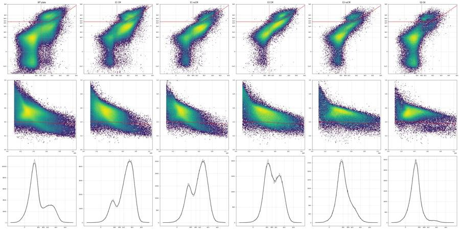
83
agent
Building the FlowKit gating strategy now (time → cells → singlets → live → caspase-positive, with a custom compensation matrix), then exporting gates.xml and counts.csv.
84
tool call · Bash
cd /task/work; cat > build_gates.py <<'EOF'
import flowkit as fk, numpy as np, pandas as pd, warnings, os
warnings.filterwarnings('ignore')
OUT='/task/outputs'
lay=pd.read_csv('/task/inputs/plate_layout.csv')
gs=fk.GatingStrategy()
# --- compensation: spillover measured from single-stain wells G7 (caspase only) and G8 (SYTOX only)
SPILL=np.array([[1.0,0.89],[0.0004,1.0]])
comp=fk.Matrix(SPILL,detectors=['BL1-A','BL2-A'],fluorochromes=['CellEvent_Casp37_Green','SYTOX_AADvanced'])
gs.add_comp_matrix('comp_G7_G8',comp)
lgl=fk.transforms.LogicleTransform(param_t=1048576,param_w=1.0,param_m=4.5,param_a=0)
gs.add_transform('logicle',lgl)
T=lambda v: lgl.apply(np.array(v,dtype=float))
d_time=fk.Dimension('Time',compensation_ref='uncompensated',range_min=0,range_max=15000)
d_fsc=fk.Dimension('FSC-A',compensation_ref='uncompensated')
d_ssc=fk.Dimension('SSC-A',compensation_ref='uncompensated')
d_fsch=fk.Dimension('FSC-H',compensation_ref='uncompensated')
d_bl1=fk.Dimension('BL1-A',compensation_ref='comp_G7_G8',transformation_ref='logicle')
d_bl2=fk.Dimension('BL2-A',compensation_ref='comp_G7_G8',transformation_ref='logicle')
# 1 time_ok: drop the end-of-draw tail (>15 s)
gs.add_gate(fk.gates.RectangleGate('time_ok',[d_time]),('root',))
# 2 cells: FSC-A/SSC-A polygon, excludes debris, low-SSC streak and off-scale events
cells_v=[(1.0e5,5.0e4),(3.0e5,7.5e4),(1.04e6,1.9e5),(1.04e6,1.04e6),(1.0e5,1.04e6)]
gs.add_gate(fk.gates.PolygonGate('cells',[d_fsc,d_ssc],cells_v),('root','time_ok'))
# 3 singlets: FSC-A vs FSC-H
sing_v=[(1.0e5,4.0e4),(4.0e5,1.6e5),(1.04e6,3.8e5),(1.04e6,7.5e5),(1.0e5,1.1e5)]
gs.add_gate(fk.gates.PolygonGate('singlets',[d_fsc,d_fsch],sing_v),('root','time_ok','cells'))
# 4 live: not SYTOX-AADvanced-bright (compensated BL1 x BL2, logicle axes)
bx=[-1e5,2e3,2e4,2e5]; by=[2.5e4,2.5e4,1.5e5,9e5]
live_raw=[(-1e5,-1e5),(bx[0],by[0]),(bx[1],by[1]),(bx[2],by[2]),(bx[3],by[3]),(1.2e6,9e5),(1.2e6,-1e5)]
live_v=list(zip(T([p[0] for p in live_raw]),T([p[1] for p in live_raw])))
P=('root','time_ok','cells','singlets')
gs.add_gate(fk.gates.PolygonGate('live',[d_bl1,d_bl2],live_v),P)
dead_raw=[(bx[0],by[0]),(bx[1],by[1]),(bx[2],by[2]),(bx[3],by[3]),(2e5,3e6),(-1e5,3e6)]
dead_v=list(zip(T([p[0] for p in dead_raw]),T([p[1] for p in dead_raw])))
gs.add_gate(fk.gates.PolygonGate('sytox_bright_dead',[d_bl1,d_bl2],dead_v),P)
# 5 caspase-3/7 positive within live; and within all singlets (sensitivity)
thr=float(T([600.0])[0])
d_bl1_pos=fk.Dimension('BL1-A',compensation_ref='comp_G7_G8',transformation_ref='logicle',range_min=thr)
gs.add_gate(fk.gates.RectangleGate('caspase_pos',[d_bl1_pos]),P+('live',))
gs.add_gate(fk.gates.RectangleGate('caspase_pos_all_singlets',[d_bl1_pos]),P)
with open(f'{OUT}/gates.xml','wb') as f: fk.export_gatingml(gs,f)
g2=fk.parse_gating_xml(f'{OUT}/gates.xml')
print(g2.get_gate_hierarchy('ascii'))
pops=[('time_ok','other','all_events'),('cells','cells','time_ok'),('singlets','singlets','cells'),('live','live','singlets'),
('caspase_pos','marker_positive','live'),('sytox_bright_dead','other','singlets'),('caspase_pos_all_singlets','other','singlets')]
rows=[]; extra=[]
for r in lay.itertuples():
s=fk.Sample('/task/inputs/raw/'+r.file,ignore_offset_error=True)
res=g2.gate_sample(s)
rep=res.report.set_index('gate_name')
n=s.event_count
cnt={'all_events':n}
rows.append(dict(file=r.file,well=r.well,population='all_events',role='other',parent='none',count=n,pct_of_parent=''))
for p,role,par in pops:
c=int(rep.loc[p,'count']); cnt[p]=c
pc=cnt[par]
rows.append(dict(file=r.file,well=r.well,population=p,role=role,parent=par,count=c,pct_of_parent=round(100*c/pc,4) if pc else ''))
# MFI of comp BL1 in live (for sensitivity)
live=res.get_gate_membership('live')
ev=s.get_events('raw');
cidx=[s.pnn_labels.index('BL1-A'),s.pnn_labels.index('BL2-A')]
cc=ev[:,cidx]@np.linalg.inv(SPILL)
extra.append(dict(well=r.well,live_bl1_median=float(np.median(cc[live,0])),live_bl1_geo=float(np.exp(np.mean(np.log(np.clip(cc[live,0],10,None))))) ))
pd.DataFrame(rows)[['file','well','population','role','parent','count','pct_of_parent']].to_csv(f'{OUT}/counts.csv',index=False)
pd.DataFrame(extra).to_csv('/task/work/mfi.csv',index=False)
print('done')
EOF
python3 build_gates.py 2>&1 | tail -20; head -12 /task/outputs/counts.csv85
tool output
root
╰── time_ok
╰── cells
╰── singlets
├── caspase_pos_all_singlets
├── live
│ ╰── caspase_pos
╰── sytox_bright_dead
done
file,well,population,role,parent,count,pct_of_parent
Caspase-assay-2-mlk_caspase_Group_A1.fcs,A1,all_events,other,none,31328,
Caspase-assay-2-mlk_caspase_Group_A1.fcs,A1,time_ok,other,all_events,31328,100.0
Caspase-assay-2-mlk_caspase_Group_A1.fcs,A1,cells,cells,time_ok,19964,63.7257
Caspase-assay-2-mlk_caspase_Group_A1.fcs,A1,singlets,singlets,cells,18602,93.1777
Caspase-assay-2-mlk_caspase_Group_A1.fcs,A1,live,live,singlets,16553,88.9851
Caspase-assay-2-mlk_caspase_Group_A1.fcs,A1,caspase_pos,marker_positive,live,3521,21.2711
Caspase-assay-2-mlk_caspase_Group_A1.fcs,A1,sytox_bright_dead,other,singlets,2049,11.0149
Caspase-assay-2-mlk_caspase_Group_A1.fcs,A1,caspase_pos_all_singlets,other,singlets,5468,29.3947
Caspase-assay-2-mlk_caspase_Group_A2.fcs,A2,all_events,other,none,40169,
Caspase-assay-2-mlk_caspase_Group_A2.fcs,A2,time_ok,other,all_events,40169,100.0
Caspase-assay-2-mlk_caspase_Group_A2.fcs,A2,cells,cells,time_ok,27911,69.483987
tool call · Bash
cd /task/work; python3 - <<'EOF' 2>&1 | grep -v Warn
import flowkit as fk, numpy as np, warnings
warnings.filterwarnings('ignore')
s=fk.Sample('/task/inputs/raw/Caspase-assay-2-mlk_caspase_Group_A1.fcs')
i=s.pnn_labels.index('Time')
print(s.get_events('raw')[:,i].max(), s.get_metadata().get('timestep'))
print(s.pnn_labels, s.pns_labels)
print(s.get_events('raw')[:3])
import inspect
src=inspect.getsource(fk.Sample.__init__)
import re
for m in re.finditer(r'.*time.*',src,re.I): print(m.group(0))
EOF88
tool output
15.98 0.001
['Time', 'FSC-A', 'SSC-A', 'BL1-A', 'BL2-A', 'FSC-H', 'SSC-H', 'BL1-H', 'BL2-H', 'FSC-W', 'SSC-W', 'BL1-W', 'BL2-W'] ['Time', 'FSC-A', 'SSC-A', 'AAV-GFP-GFP-A', 'AAdvanced livedead-A', 'FSC-H', 'SSC-H', 'AAV-GFP-GFP-H', 'AAdvanced livedead-H', 'FSC-W', 'SSC-W', 'AAV-GFP-GFP-W', 'AAdvanced livedead-W']
[[1.40000e-02 5.50719e+05 4.54477e+05 1.45500e+03 1.28560e+04 2.02195e+05
1.56841e+05 8.52000e+02 6.95100e+03 2.50000e+02 2.66000e+02 0.00000e+00
6.20000e+01]
[1.50000e-02 4.32000e+04 2.84100e+03 2.90000e+01 7.85000e+02 4.32730e+04
2.74000e+03 5.40000e+01 5.54000e+02 8.70000e+01 2.90000e+01 0.00000e+00
0.00000e+00]
[1.50000e-02 3.80977e+05 1.49763e+05 1.34000e+02 1.38000e+02 2.06369e+05
9.31810e+04 9.60000e+01 4.90000e+02 1.32000e+02 1.30000e+02 0.00000e+00
0.00000e+00]]
self.time_index = None
# Determine fluoro vs scatter vs time channels
elif channel_label.lower()[:4] not in ['fsc-', 'ssc-', 'time']:
elif channel_label.lower() == 'time':
self.time_index = n - 1
# as corrected for proper lin/log display, and the time channel
# scaled by the 'timestep' keyword value (if present).
# Note: The time channel is scaled by the timestep (if present),
# time channel that matches the fluoro channels. Not sure why
# on the time data. Here, we set any time gain to 1.0.
if self.time_index is not None:
channel_gain[self.time_index] = 1.0
if 'timestep' in self.metadata and self.time_index is not None:
time_step = float(self.metadata['timestep'])
raw_events[:, self.time_index] = raw_events[:, self.time_index] * time_step90
tool call · Bash
cd /task/work; sed -i "s/range_min=0,range_max=15000)/range_min=0.0,range_max=15.0)/" build_gates.py && python3 build_gates.py 2>&1 | tail -3; python3 - <<'EOF'
import pandas as pd
c=pd.read_csv('/task/outputs/counts.csv')
p=c.pivot(index='well',columns='population',values='pct_of_parent')
n=c.pivot(index='well',columns='population',values='count')
lay=pd.read_csv('/task/inputs/plate_layout.csv').set_index('well')
p=p.join(lay[['sample','conditioned_media']]).join(n[['live']].rename(columns={'live':'n_live'}))
p['cm']=p.conditioned_media.str[:7]
pd.set_option('display.width',250); pd.set_option('display.max_rows',200)
print(p.loc[lay.index,['sample','cm','time_ok','cells','singlets','live','n_live','caspase_pos','sytox_bright_dead','caspase_pos_all_singlets']].round(1).to_string())
EOF91
tool output
│ ╰── caspase_pos
╰── sytox_bright_dead
done
sample cm time_ok cells singlets live n_live caspase_pos sytox_bright_dead caspase_pos_all_singlets
well
A1 WT 10uM WT 24hr 95.1 63.8 93.1 88.9 15716 21.3 11.1 29.6
A2 WT 5uM WT 24hr 91.1 69.5 92.0 92.0 21518 24.2 8.0 29.8
A3 WT 2uM WT 24hr 90.7 64.8 92.4 90.8 23333 24.1 9.2 30.3
A4 WT DMSO WT 24hr 91.4 69.5 92.3 88.2 17092 32.0 11.8 39.8
A5 WT 10uM WT 48hr 91.0 69.9 92.2 90.0 18468 25.9 10.0 32.9
A6 WT 5uM WT 48hr 96.5 72.5 93.7 91.4 20022 23.8 8.6 30.0
A7 WT 2uM WT 48hr 90.9 72.9 94.0 90.4 20534 22.4 9.6 29.4
A8 WT DMSO WT 48hr 96.4 72.6 94.0 87.8 13210 25.2 12.2 34.0
A9 WT 10uM no cond 91.9 59.6 91.1 89.7 17924 22.1 10.3 29.9
A10 WT 5uM no cond 92.1 66.5 92.5 88.3 21159 20.2 11.7 29.2
A11 WT 2uM no cond 92.1 63.8 93.0 87.5 20751 21.3 12.5 30.7
A12 WT DMSO no cond 95.0 60.6 90.0 86.5 13771 22.7 13.5 33.0
B1 E1 10uM WT 24hr 93.4 74.3 92.4 72.4 8701 73.7 27.6 80.9
B2 E1 5uM WT 24hr 95.5 70.0 92.6 87.7 17628 72.9 12.3 76.2
B3 E1 2uM WT 24hr 91.5 66.6 92.2 86.1 19387 78.1 13.9 81.1
B4 E1 DMSO WT 24hr 96.4 66.7 90.1 77.5 8965 73.5 22.5 79.4
B5 E1 10uM WT 48hr 92.5 77.8 93.4 78.7 9451 74.7 21.3 80.1
B6 E1 5uM WT 48hr 94.1 71.1 92.5 86.8 17043 74.3 13.2 77.7
B7 E1 2uM WT 48hr 94.6 67.5 93.1 84.0 17683 76.5 16.0 80.2
B8 E1 DMSO WT 48hr 91.9 64.3 89.7 86.9 12069 77.0 13.1 80.0
B9 E1 10uM no cond 94.8 62.8 91.2 94.3 17606 58.1 5.7 60.5
B10 E1 5uM no cond 94.4 63.0 91.0 97.0 21049 59.2 3.0 60.4
B11 E1 2uM no cond 93.3 58.0 91.5 94.5 19189 66.8 5.5 68.6
B12 E1 DMSO no cond 94.4 49.9 88.5 93.6 12363 63.7 6.4 66.0
C1 E3 10uM WT 24hr 94.7 58.3 87.1 88.1 7484 59.6 11.9 64.4
C2 E3 5uM WT 24hr 92.1 50.0 86.4 90.3 9148 61.8 9.7 65.4
C3 E3 2uM WT 24hr 95.2 58.3 89.4 90.6 9483 51.7 9.4 56.2
C4 E3 DMSO WT 24hr 91.1 52.5 82.8 89.1 6393 59.8 10.9 64.2
C5 E3 10uM WT 48hr 94.2 50.9 83.0 90.2 6722 53.5 9.8 58.1
C6 E3 5uM WT 48hr 95.5 51.2 85.0 92.8 8365 56.9 7.2 60.0
C7 E3 2uM WT 48hr 95.3 52.7 88.0 95.6 9662 49.4 4.4 51.7
C8 E3 DMSO WT 48hr 94.4 52.7 83.1 90.8 6982 50.7 9.2 55.2
C9 E3 10uM no cond 94.9 58.6 90.0 94.5 10859 25.7 5.5 29.8
C10 E3 5uM no cond 95.1 64.2 92.3 96.4 8592 18.0 3.6 20.8
C11 E3 2uM no cond 96.5 66.0 93.8 97.1 11504 15.9 2.9 18.2
C12 E3 DMSO no cond 91.7 58.9 90.5 96.8 10919 24.4 3.2 26.7
D1 WT 10uM WT 24hr 95.9 65.3 94.1 91.0 16059 36.3 9.0 42.0
D2 WT 5uM WT 24hr 91.9 67.0 93.0 92.9 22632 28.1 7.1 33.2
D3 WT 2uM WT 24hr 93.9 64.8 92.9 91.6 23143 30.5 8.4 36.2
D4 WT DMSO WT 24hr 96.6 67.6 91.1 86.0 13342 37.8 14.0 46.5
D5
… [5,632 more characters not shown]93
tool call · Bash
cd /task/work; cat > s6.py <<'EOF'
import flowkit as fk, numpy as np, pandas as pd, warnings
warnings.filterwarnings('ignore')
lay=pd.read_csv('/task/inputs/plate_layout.csv')
g=fk.parse_gating_xml('/task/outputs/gates.xml')
SP=np.array([[1.0,0.89],[0.0004,1.0]]); Si=np.linalg.inv(SP)
rows=[]
for r in lay.itertuples():
s=fk.Sample('/task/inputs/raw/'+r.file)
res=g.gate_sample(s)
ev=s.get_events('raw'); lab=s.pnn_labels
cc=ev[:,[lab.index('BL1-A'),lab.index('BL2-A')]]@Si
sing=res.get_gate_membership('singlets'); live=res.get_gate_membership('live')
d=dict(well=r.well,line=r.cell_line,cpt=r.camptothecin,cm=r.conditioned_media[:7],n_live=int(live.sum()))
for thr in (400,600,800,1000,1500):
d[f'pos{thr}']=100*(cc[live,0]>thr).mean()
d['med_bl1_live']=np.median(cc[live,0]);
d['sytox_strict_neg_of_sing']=100*(cc[sing,1]<3000).mean() # strictly SYTOX-negative
d['casp_in_strict_neg']=100*((cc[sing,1]<3000)&(cc[sing,0]>600)).sum()/max((cc[sing,1]<3000).sum(),1)
d['bl2neg_cluster']=100*(cc[sing,1]<0).mean()
d['dead']=100*res.get_gate_membership('sytox_bright_dead').sum()/sing.sum()
d['cells_pct']=100*res.get_gate_membership('cells').sum()/res.get_gate_membership('time_ok').sum()
d['fsc_med']=np.median(ev[sing,lab.index('FSC-A')]); d['ssc_med']=np.median(ev[sing,lab.index('SSC-A')])
rows.append(d)
o=pd.DataFrame(rows); o.to_csv('sens.csv',index=False)
pd.set_option('display.width',250); pd.set_option('display.max_rows',200)
print(o.round(1).to_string())
EOF
python3 s6.py 2>&1 | grep -v -i warn94
tool output
well line cpt cm n_live pos400 pos600 pos800 pos1000 pos1500 med_bl1_live sytox_strict_neg_of_sing casp_in_strict_neg bl2neg_cluster dead cells_pct fsc_med ssc_med 0 A1 WT 10uM WT 24hr 15716 27.5 21.3 16.9 13.6 8.5 186.8 71.4 12.0 15.1 11.1 63.8 328346.0 196207.5 1 A2 WT 5uM WT 24hr 21518 28.9 24.2 20.8 18.1 12.8 185.5 76.0 13.7 14.8 8.0 69.5 330684.5 201631.5 2 A3 WT 2uM WT 24hr 23333 28.7 24.1 20.8 17.9 12.8 185.8 75.5 13.9 15.1 9.2 64.8 307701.0 202384.5 3 A4 WT DMSO WT 24hr 17092 38.6 32.0 26.2 21.3 13.2 235.9 67.5 18.1 14.4 11.8 69.5 319315.0 191071.5 4 A5 WT 10uM WT 48hr 18468 31.4 25.9 21.7 18.2 11.8 201.1 71.1 13.5 16.2 10.0 69.9 309235.0 199730.5 5 A6 WT 5uM WT 48hr 20022 28.2 23.8 20.5 17.7 12.7 192.8 69.4 10.1 6.6 8.6 72.5 396191.0 209397.0 6 A7 WT 2uM WT 48hr 20534 26.3 22.4 19.3 16.7 12.1 188.2 69.3 8.4 7.0 9.6 72.9 385729.0 207993.0 7 A8 WT DMSO WT 48hr 13210 30.6 25.2 21.1 17.5 11.1 202.0 65.2 10.1 6.3 12.2 72.6 399428.0 205219.5 8 A9 WT 10uM no cond 17924 29.8 22.1 17.3 13.8 8.9 203.9 69.6 10.4 16.6 10.3 59.6 316361.0 186675.0 9 A10 WT 5uM no cond 21159 25.3 20.2 16.9 14.4 9.7 185.5 70.7 8.5 18.1 11.7 66.5 319305.5 198432.5 10 A11 WT 2uM no cond 20751 25.9 21.3 17.9 15.5 10.5 184.1 70.1 8.4 17.5 12.5 63.8 321104.5 197412.5 11 A12 WT DMSO no cond 13771 29.7 22.7 17.6 13.9 8.8 205.6 65.1 8.8 13.8 13.5 60.6 314646.5 190674.0 12 B1 E1 10uM WT 24hr 8701 83.3 73.7 62.2 51.7 32.9 1038.4 34.0 54.7 3.1 27.6 74.3 333749.0 214659.0 13 B2 E1 5uM WT 24hr 17628 78.3 72.9 67.0 60.4 43.5 1305.5 37.3 42.2 4.5 12.3 70.0 350008.0 188126.5 14 B3 E1 2uM WT 24hr 19387 82.6 78.1 73.2 67.4 51.8 1556.7 31.5 47.6 2.8 13.9 66.6 352713.0 179621.0 15 B4 E1 DMSO WT 24hr 8965 81.6 73.5 63.1 53.0 33.8 1061.1 33.1 49.6 3.7 22.5 66.7 343382.5 206772.5 16 B5 E1 10uM WT 48hr 9451 83.2 74.7 64.7 55.8 38.5 1140.1 30.9 49.6 2.7 21.3 77.8 327355.0 208326.5 17 B6 E1 5uM WT 48hr 17043 80.0 74.3 67.7 61.0 45.3 1342.7 32.7 42.1 3.2 13.2 71.1 342307.0 191562.0 18 B7 E1 2uM WT 48hr 17683 81.5 76.5 71.2 65.1 50.0 1500.4 27.5 41.1 2.5 16.0 67.5 341138.0 190751.5 19 B8 E1 DMSO WT 48hr 12069 82.9 77.0 69.9 62.8 46.9 1399.2 28.5 45.0 2.8 13.1 64.3 354808.5 191022.5 20 B9 E1 10uM no cond 17606 67.5 58.1 48.6 40.1 24.8 767.9 49.5 29.1 6.2 5.7 62.8 334170.0 188876.5 21 B10 E1 5uM no cond 21049 68.0 59.2 49.8 41.0 25.0 795.8 48.9 28.1 6.0 3.0 63.0 336037.0 183053.0 22 B11 E1 2uM no cond 19189 74.7 66.8 58.5 49.2 30.3 984.0 41.9 36.1 4.0 5.5 58.0 335482.0 168894.0 23 B12 E1 DMSO no cond 12363 74.0 63.7 52.4 42.4 24.6 844.9 37.1 28.3 3.7 6.4 49.9 351287.0 177201.0 24 C1 E3 10uM WT 24hr 7484 73.3 59.6 49.9 42.2 28.2 794.7 26.6 10.1 0.7 11.9 58.3 483596.0 334903.0 25 C2 E3 5uM WT 24hr 9148 74.1 61.8 53.3 47.0 32.4 902.9 32.3 16.5 1.0 9.7 50.0 432202.5 341557.0 26 C3 E3 2uM WT 24hr 9483 65.3 51.7 43.4 37.8 25.5 636.9 33.8 5.8 0.7 9.4 58.3 475985.0 357051.0 27 C4 E3 DMSO WT 24hr 6393 71.9 59.8 51.4 44.2 30.6 839.2 30.2 12.5 1.4 10.9 52.5 415987.0 334482.0 28 C5 E3 10uM WT 48hr 6722 67.6 53.5 44.3 38.0 26.2 667.0 34.8 9.9 1.3 9.8 50.9 425353.0 358115.0 29 C6 E3 5uM WT … [10,118 more characters not shown]
96
thinking
Counts hold steady across caspase thresholds from 400 to 1500, so the ordering is robust. Next I'll visually check the gates on representative wells, then handle flags, the condition summary, figure and report.
97
tool call · Bash
cd /task/work; cat > p9.py <<'EOF'
from load import *
import matplotlib; matplotlib.use('Agg'); import matplotlib.pyplot as plt
import flowkit as fk
L=lay.set_index('well')
lgl=fk.transforms.LogicleTransform(param_t=1048576,param_w=1.0,param_m=4.5,param_a=0)
T=lambda v: lgl.apply(np.array(v,dtype=float))
Si=np.linalg.inv(np.array([[1,0.89],[0.0004,1]]))
from matplotlib.path import Path
cells_v=np.array([(1.0e5,5.0e4),(3.0e5,7.5e4),(1.04e6,1.9e5),(1.04e6,1.04e6),(1.0e5,1.04e6)])
sing_v=np.array([(1.0e5,4.0e4),(4.0e5,1.6e5),(1.04e6,3.8e5),(1.04e6,7.5e5),(1.0e5,1.1e5)])
bx=[-1e5,2e3,2e4,2e5]; by=[2.5e4,2.5e4,1.5e5,9e5]
wells=['G2','G7','G8','A12','A4','B12','B4','C12','C4','F8','D12','G5']
fig,ax=plt.subplots(3,len(wells),figsize=(4*len(wells),12))
xt=[0,600,1e4,1e5]; yt=[-1e3,0,1e3,1e4,1e5,1e6]
for j,w in enumerate(wells):
d=D[w]; d=d[d.Time<15000]
a=ax[0,j]; a.hist2d(d['FSC-A'],d['SSC-A'],bins=150,range=[[0,1.05e6],[0,1.05e6]],norm=matplotlib.colors.LogNorm()); a.plot(*np.vstack([cells_v,cells_v[:1]]).T,'r-'); a.set_title(f"{w} {L.loc[w,'sample']} | {L.loc[w,'conditioned_media'][:7]}",fontsize=9)
c=d[Path(cells_v).contains_points(d[['FSC-A','SSC-A']].values)]
a=ax[1,j]; a.hist2d(c['FSC-A'],c['FSC-H'],bins=150,range=[[0,1.05e6],[0,7e5]],norm=matplotlib.colors.LogNorm()); a.plot(*np.vstack([sing_v,sing_v[:1]]).T,'r-')
s=c[Path(sing_v).contains_points(c[['FSC-A','FSC-H']].values)]
x=s[['BL1-A','BL2-A']].values@Si
a=ax[2,j]; a.hist2d(T(x[:,0]),T(x[:,1]),bins=150,range=[[T([-1e3])[0],T([2e5])[0]],[T([-1e4])[0],T([1e6])[0]]],norm=matplotlib.colors.LogNorm())
a.plot(T(bx),T(by),'r-'); a.axvline(T([600])[0],color='r',ls=':')
a.set_xticks(T(xt)); a.set_xticklabels(['0','600','1e4','1e5']); a.set_yticks(T(yt)); a.set_yticklabels(['-1e3','0','1e3','1e4','1e5','1e6'])
plt.tight_layout(); plt.savefig('p9.png',dpi=45)
EOF
python3 p9.py98
tool output
(Bash completed with no output)
99
tool call · Read
{
"file_path": "/task/work/p9.png"
}100
tool output
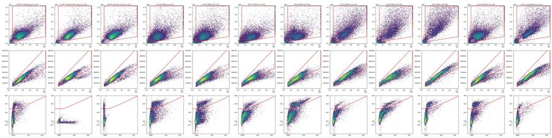
102
tool call · Skill
{
"skill": "dataviz"
}103
tool output
Launching skill: dataviz
104
tool call · Bash
cd /tmp/claude-0/bundled-skills/2.1.322/e2e4361935c94d7ae40e0f289be3195d/dataviz; sed -n 1,80p references/palette.md; echo ----; grep -n -i "dot\|strip\|small multiple" references/choosing-a-form.md | head -20
105
tool output
# Reference palette
This is the **reference instance** of the data-viz method: every parameter the
method needs, filled in with a validated default palette. The rest of the skill
is system-agnostic - **to target your brand, substitute this file's values** and
re-run the validator. Nothing else changes.
## How to use these values
Everything below is plain hex. In an HTML chart, **define the slots you use as
CSS custom properties in a local `<style>` block** at the top of the file, then
reference them by role throughout - so the light/dark values swap in one place,
and the chart body is written against roles rather than raw hex:
```css
.viz-root {
color-scheme: light;
--surface-1: #fcfcfb; /* chart surface */
--text-primary: #0b0b0b;
--text-secondary: #52514e;
--series-1: #2a78d6; /* categorical slot 1 */
/* ...only the roles this chart uses */
}
@media (prefers-color-scheme: dark) {
:root:where(:not([data-theme="light"])) .viz-root {
color-scheme: dark;
--surface-1: #1a1a19;
--text-primary: #f0efec;
--text-secondary: #c3c2b7;
--series-1: #3987e5;
}
}
:root[data-theme="dark"] .viz-root {
color-scheme: dark;
--surface-1: #1a1a19;
--text-primary: #f0efec;
--text-secondary: #c3c2b7;
--series-1: #3987e5;
}
```
Declare the dark values under both scopes as above - the media query covers
the OS setting; the `data-theme` scope covers the viewer's theme toggle,
which must win both ways (the `:not(...)` guard lets a light stamp beat
OS-dark; `:where()` keeps the media block below the toggle scope).
## Categorical palette
Both modes are selected. The dark column is the same eight hues stepped for the
dark surface, not a separate palette:
| Slot | Hue | Light | Dark |
|------|-----|-------|------|
| 1 | blue | `#2a78d6` | `#3987e5` |
| 2 | orange | `#eb6834` | `#d95926` |
| 3 | aqua | `#1baf7a` | `#199e70` |
| 4 | yellow | `#eda100` | `#c98500` |
| 5 | magenta | `#e87ba4` | `#d55181` |
| 6 | green | `#008300` | `#008300` |
| 7 | violet | `#6250d6` | `#9085e9` |
| 8 | red | `#e34948` | `#e66767` |
This order passes every hard gate in both modes on the default *adjacent*
pairlist (stacks, bars, lines): worst adjacent CVD Delta E 9.1 light / 8.4 dark
(OKLab ×100, >=8 target), worst adjacent normal-vision Delta E 19.6 light / 19.3
dark (>=15 floor). Under `--pairs all` (scatter, bubble, choropleth, small
multiples) the full eight cannot clear the floors - with all 28 pairs in
play no ordering can (the pairlist no longer depends on order), and
re-stepping is off the table by the documented-palette rule - so those
chart forms carry a series cap: **the first three slots validate all-pairs
in both modes** (worst pair CVD Delta E 9.2 light / 9.4 dark, normal-vision 24.0
light / 20.9 dark - clear of the CVD warn band). Past three, fold to "Other" or
facet: the fourth slot puts yellow and orange on screen
together, and that pair fails the all-pairs floors (normal-vision 13.7
light; CVD 4.8 dark). Three light-mode slots (magenta, yellow, aqua)
sit below 3:1 contrast on the light surface: the **relief rule** applies (ship
visible direct labels or the table view). The dark steps were chosen for the
dark band (OKLCH L ~ 0.48-0.67, >= 3:1 on the dark surface) and validated as a
set. (Ordering history: adopted July 2026 for its more harmonious opening -
the same eight hues and steps as its predecessor, re-ordered, zero hex
----
66:| 4 | adjacent forms (stacks, bars, lines) stay gate-safe, but direct labels become mandatory - yellow and orange now share the screen; all-pairs forms (scatter, bubble, choropleth, small multiples) cap at **three** - fold to "Other" or facet rather than seat a 4th |
67:| 5-6 | soft cap; legend or small multiples |
68:| 7-8 | token ceiling; past it, fold the tail into "Other," facet into small multiples, or use composite encoding (hue × shape) |
Shell cwd was reset to /task106
tool call · Bash
cd /task/work; python3 - <<'EOF'
import pandas as pd, numpy as np
t=pd.read_csv('tail_qc.csv'); s=pd.read_csv('scatter_sig.csv'); q=pd.read_csv('time_qc.csv')
print(t[['pct_after']].describe().T)
print(s[['well','sat']].sort_values('sat').tail(30).T.to_string())
EOF107
tool output
count mean std min 25% 50% 75% max
pct_after 80.0 0.497418 0.524397 0.0 0.0 0.45623 0.862277 1.827402
73 7 44 39 62 35 65 66 30 61 64 71 31 25 60 29 27 24 28 26 32 63 76 33 70 34 77 67 68 69
well G2 A8 D9 D4 F3 C12 F6 F7 C7 F2 F5 F12 C8 C2 F1 C6 C4 C1 C5 C3 C9 F4 G5 C10 F11 C11 G6 F8 F9 F10
sat 2.62 2.7 2.86 3.0 6.83 7.0 7.18 7.36 7.42 7.45 7.46 7.47 7.49 7.8 7.94 7.96 8.15 8.17 8.44 8.54 8.59 9.07 9.1 9.14 10.31 10.42 10.82 12.53 12.66 12.97109
tool call · Bash
cd /tmp/claude-0/bundled-skills/2.1.322/e2e4361935c94d7ae40e0f289be3195d/dataviz && node scripts/validate_palette.js "#2a78d6,#eb6834,#1baf7a" --mode light --pairs all 2>&1 | tail -20; sed -n 1,60p references/marks-and-anatomy.md
110
tool output
/bin/bash: line 1: node: command not found # Marks & anatomy The quiet, considered look is a few fixed specs plus two pieces of negative space. The data is the only thing allowed to be loud. ## Mark specs (fixed across every chart) | Mark | Spec | |---|---| | Bar / column | **<= 24px thick** (cap it - never fill the slot; let the band's leftover be air); **4px rounded data-end, square at the baseline**; grows from a single baseline | | Line | **2px**, round join/cap | | Marker / end-dot | **>= 8px** (r >= 4), filled with the series color | | Area fill | the series hue at **~10% opacity** (a wash, never a saturated block) | | Gridlines / axes | one-step-off-surface gray, **hairline (1px), solid** (never dashed), recessive | ## The two spacers (white doing the separating) - **Surface gap.** A **2px gap** in the surface color separates touching marks - every segment of a stacked bar, and every adjacent (touching) bar, the same width. Keep it one consistent width across a stack; neighbors one step apart read distinct because of the gap, not a stroke drawn around them. - **Surface ring.** Dots and end-markers carry a **2px ring in the surface color**, so they stay legible where they cross a line or overlap each other. The ring is part of the mark's hover/hit target, not just spacing - see `interaction.md` (small dots are easy to under-size for hover). Never draw a border around a mark to separate it. The gap and the ring are the mechanism; a stroke adds data-weight ink that isn't data. ## Labels & legend A **legend is always present for two or more series** - the dependable identity channel; never make the reader rely on color-matching alone. Direct labels then ride the marks to *supplement* it. **A single series needs no legend box**: there is only one color, so the chart's title or subtitle already says what is plotted. A box with one swatch restates the title and costs space. - **Label selectively - never a number on every point.** A value beside every dot or segment is chaos and goes unread. Label the endpoint, the extreme, or the one series the story is about; let the axis, the legend, and the tooltip/table carry the rest. Direct labels work *because* they are sparing - flood the chart and they stop working. - **Direct labels before gridlines; gridlines before a second axis.** - **A label that won't fit doesn't get clipped - measure first.** Only place a label *inside* a bar or stacked segment when the rendered text fits with comfortable padding on both sides. If it doesn't fit: for a whole bar/column, move the label outside the bar end (or to the tooltip if there's no room outside either); for an *interior* stacked segment (which has no free end), skip the inline label and let the legend + tooltip carry it. Either way the value stays in the table view, so nothing is gated. Never use `overflow: hidden` on the segment to "solve" it - that crops the first/last characters and is worse than no label. Text never overflows or is clipped by its own mark. - Bars -> value at the tip. Columns -> value on the cap. Lines -> value at the end. - Y-axis ticks: round to clean numbers, in full under 10,000 (0 / 1,000 / 2,000) and compact on an axis that reaches it (0 / 10K / 20K), one style per axis; along a horizontal axis, in full under a million where the labels fit side by side. They carry the values you didn't directly label, so keep them unless every value is labeled. - **Text never wears the data color.** Marks - bars, lines, dots, area fills - carry the series color; labels, values, legends, and axis text use **text tokens** (primary / secondary / muted). A light categorical hue (yellow, aqua) is illegible as text on the surface. Identity comes from the colored mark *beside* the text - a Shell cwd was reset to /task
112
tool call · Bash
cd /task/work; cat > finalize.py <<'EOF'
import pandas as pd, numpy as np, json
from scipy import stats
OUT='/task/outputs'
lay=pd.read_csv('/task/inputs/plate_layout.csv')
c=pd.read_csv(f'{OUT}/counts.csv')
cnt=c.pivot(index='well',columns='population',values='count')
pct=c.pivot(index='well',columns='population',values='pct_of_parent')
sig=pd.read_csv('scatter_sig.csv').set_index('well')
L=lay.set_index('well')
df=L.join(pct[['caspase_pos','cells','singlets','live','sytox_bright_dead','caspase_pos_all_singlets']]).join(cnt[['all_events','live']].rename(columns={'live':'n_live'})).join(sig[['sat','fsc','ssc','bl1neg']])
df['cm']=df.conditioned_media.map({'no conditioned media':'no CM','WT 24hr conditioned media':'WT 24hr CM','WT 48hr conditioned media':'WT 48hr CM'})
df['plate']=df.index.str[0]!='G'
m=df.caspase_pos
# ---------- flags ----------
flags={}
def F(w,issue,ev,dec): flags[w]=(issue,ev,dec)
e3=df[(df.cell_line=='E3')&df.plate]; e1=df[(df.cell_line=='E1')&df.plate]; wt=df[(df.cell_line=='WT')&df.plate]
rng=lambda s,col,f='{:.0f}': f"{f.format(s[col].min())}-{f.format(s[col].max())}"
for w in ['G3','G4']:
r=df.loc[w]
F(w,'mislabel',f"Labelled E3 but scatter does not match E3: {r.sat:.1f}% of cell-sized events off-scale on FSC-A/SSC-A (E3 plate wells {rng(e3,'sat','{:.1f}')}%; E1 {rng(e1,'sat','{:.1f}')}%; WT {rng(wt,'sat','{:.1f}')}%), median SSC-A {r.ssc/1e3:.0f}k (E3 {rng(e3.assign(k=e3.ssc/1e3),'k')}k; E1 {rng(e1.assign(k=e1.ssc/1e3),'k')}k). Looks like E1 or WT; likely swapped with G5/G6 (the 2022-11-30 and 2022-12-02 maps also place the untreated KO wells differently). Caspase+ of live {r.caspase_pos:.1f}%. Identity cannot be confirmed, so not used.",'exclude')
for w in ['G5','G6']:
r=df.loc[w]
F(w,'mislabel',f"Labelled E1 but scatter matches E3: {r.sat:.1f}% of cell-sized events off-scale (E3 plate wells {rng(e3,'sat','{:.1f}')}%; E1 {rng(e1,'sat','{:.1f}')}%), median FSC-A {r.fsc/1e3:.0f}k and SSC-A {r.ssc/1e3:.0f}k (E3 {rng(e3.assign(k=e3.fsc/1e3),'k')}k / {rng(e3.assign(k=e3.ssc/1e3),'k')}k; E1 {rng(e1.assign(k=e1.fsc/1e3),'k')}k / {rng(e1.assign(k=e1.ssc/1e3),'k')}k). Likely swapped with G3/G4. Caspase+ of live {r.caspase_pos:.1f}%. Also off-scale scatter >5%. Not used.",'exclude')
# discordant vehicle controls
o=df[(df.cell_line=='E3')&df.plate&(df.cm!='no CM')&(df.index!='F8')]
r=df.loc['F8']
F('F8','bad_control',f"Vehicle (DMSO) control of the E3 + 48hr CM arm does not behave like a CM-treated well: caspase+ of live {r.caspase_pos:.1f}% vs {df.loc['C8','caspase_pos']:.1f}% in its replicate C8 and {o.caspase_pos.min():.1f}-{o.caspase_pos.max():.1f}% in the other 15 E3 CM wells; cells gate {r.cells:.1f}% of events vs {o.cells.min():.1f}-{o.cells.max():.1f}%; median SSC-A {r.ssc/1e3:.0f}k vs {o.ssc.min()/1e3:.0f}-{o.ssc.max()/1e3:.0f}k. Profile resembles E3 wells without CM (treatment probably missed). Also {r.sat:.1f}% of cell-sized events off-scale.",'exclude')
o=df[(df.cell_line=='WT')&df.plate&(df.cm=='no CM')&(df.index!='D12')]
r=df.loc['D12']
F('D12','bad_control',f"Vehicle (DMSO) control of the WT no-CM arm is discordant: caspase+ of live {r.caspase_pos:.1f}% vs {df.loc['A12','caspase_pos']:.1f}% in its replicate A12 and {o.caspase_pos.min():.1f}-{o.caspase_pos.max():.1f}% in the other 7 WT no-CM wells; cells gate {r.cells:.1f}% of events vs {o.cells.min():.1f}-{o.cells.max():.1f}% (less debris, closer to the untreated well G2 at {df.loc['G2','cells']:.1f}%). Looks like a well that did not receive the same handling/vehicle.",'exclude')
# positive control (10 uM camptothecin, no CM) with no induction over vehicle
veh={'WT':df.loc['A12','caspase_pos'],'E1':df.loc[['B12','E12'],'caspase_pos'].mean()}
for w in ['A9','D9','B9','E9']:
r=df.loc[w]; v=veh[r.cell_line]
F(w,'bad_control',f"Camptothecin 10uM positive control gave no induction: caspase+ of live {r.caspase_pos:.1f}% vs {v:.1f}% in the {r.cell_line} DMSO no-CM vehicle well(s) (difference {r.caspase_pos-v:+.1f} points). Well itself acquired normally ({int(r.all_events)} events, {int(r.n_live)} live singlets).",'keep_with_note')
for w,r in df.iterrows():
if w in flags: continue
if r.sat>5:
extra=''
if w in ('C9','F9'):
v=df.loc[['C12','F12'],'caspase_pos'].mean()
extra=f" Also the 10uM camptothecin positive control: only modest induction ({r.caspase_pos:.1f}% vs {v:.1f}% vehicle)."
F(w,'saturation',f"{r.sat:.1f}% of cell-sized events are off-scale (>=1.04e6) on FSC-A or SSC-A at FSC 20 / SSC 290 and are excluded by the cells gate (WT and E1 plate wells: {min(wt.sat.min(),e1.sat.min()):.1f}-{max(wt.sat.max(),e1.sat.max()):.1f}%). {int(r.n_live)} live singlets remain; read-out kept.{extra}",'keep_with_note')
else:
F(w,'none','','keep')
fl=pd.DataFrame([dict(file=L.loc[w,'file'],well=w,issue_type=flags[w][0],evidence=flags[w][1],decision=flags[w][2]) for w in lay.well])
fl.to_csv(f'{OUT}/flags.csv',index=False)
excl=list(fl[fl.decision=='exclude'].well)
print(fl.issue_type.value_counts(), fl.decision.value_counts(), excl)
# ---------- condition summary ----------
MD="percent caspase-3/7 positive live cells per well = 100 x count(caspase_pos: compensated BL1-A >= 600) / count(live: singlet cells that are not SYTOX AADvanced-bright); units: % of live singlet cells"
use=df[~df.index.isin(excl)]
rows=[]
def add(name,wells):
wells=[w for w in wells if w not in excl]
if not wells: return
v=m.loc[wells]
rows.append(dict(condition=name,wells=';'.join(wells),n_wells_used=len(wells),mean=round(v.mean(),2),sd=(round(v.std(ddof=1),2) if len(wells)>1 else ''),metric_definition=MD,normalisation_applied='none'))
doses=[('DMSO','DMSO vehicle'),('2uM','CPT 2uM'),('5uM','CPT 5uM'),('10uM','CPT 10uM')]
cms=['no CM','WT 24hr CM','WT 48hr CM']
P=df[df.plate]
for line in ['WT','E1','E3']:
for cm in cms:
for d,dn in doses:
add(f"{line} | {cm} | {dn}",list(P[(P.cell_line==line)&(P.cm==cm)&(P.camptothecin==
… [2,949 more characters not shown]113
tool output
issue_type
none 47
saturation 23
bad_control 6
mislabel 4
Name: count, dtype: int64 decision
keep 47
keep_with_note 27
exclude 6
Name: count, dtype: int64 ['D12', 'F8', 'G3', 'G4', 'G5', 'G6']
condition wells n_wells_used mean sd
0 WT | no CM | DMSO vehicle A12 1 22.70
1 WT | no CM | CPT 2uM A11;D11 2 21.65 0.56
2 WT | no CM | CPT 5uM A10;D10 2 21.17 1.45
3 WT | no CM | CPT 10uM A9;D9 2 25.94 5.43
4 WT | WT 24hr CM | DMSO vehicle A4;D4 2 34.91 4.12
5 WT | WT 24hr CM | CPT 2uM A3;D3 2 27.32 4.55
6 WT | WT 24hr CM | CPT 5uM A2;D2 2 26.19 2.76
7 WT | WT 24hr CM | CPT 10uM A1;D1 2 28.81 10.57
8 WT | WT 48hr CM | DMSO vehicle A8;D8 2 29.70 6.43
9 WT | WT 48hr CM | CPT 2uM A7;D7 2 23.67 1.84
10 WT | WT 48hr CM | CPT 5uM A6;D6 2 25.16 1.89
11 WT | WT 48hr CM | CPT 10uM A5;D5 2 26.69 1.16
12 E1 | no CM | DMSO vehicle B12;E12 2 59.25 6.32
13 E1 | no CM | CPT 2uM B11;E11 2 68.91 3.0
14 E1 | no CM | CPT 5uM B10;E10 2 60.52 1.84
15 E1 | no CM | CPT 10uM B9;E9 2 61.71 5.11
16 E1 | WT 24hr CM | DMSO vehicle B4;E4 2 78.01 6.38
17 E1 | WT 24hr CM | CPT 2uM B3;E3 2 79.29 1.62
18 E1 | WT 24hr CM | CPT 5uM B2;E2 2 76.26 4.7
19 E1 | WT 24hr CM | CPT 10uM B1;E1 2 74.27 0.86
20 E1 | WT 48hr CM | DMSO vehicle B8;E8 2 78.32 1.92
21 E1 | WT 48hr CM | CPT 2uM B7;E7 2 78.09 2.27
22 E1 | WT 48hr CM | CPT 5uM B6;E6 2 76.75 3.46
23 E1 | WT 48hr CM | CPT 10uM B5;E5 2 75.94 1.76
24 E3 | no CM | DMSO vehicle C12;F12 2 20.61 5.29
25 E3 | no CM | CPT 2uM C11;F11 2 16.05 0.27
26 E3 | no CM | CPT 5uM C10;F10 2 21.36 4.78
27 E3 | no CM | CPT 10uM C9;F9 2 30.45 6.7
28 E3 | WT 24hr CM | DMSO vehicle C4;F4 2 59.46 0.44
29 E3 | WT 24hr CM | CPT 2uM C3;F3 2 50.99 0.96
30 E3 | WT 24hr CM | CPT 5uM C2;F2 2 60.97 1.12
31 E3 | WT 24hr CM | CPT 10uM C1;F1 2 53.62 8.44
32 E3 | WT 48hr CM | DMSO vehicle C8 1 50.67
33 E3 | WT 48hr CM | CPT 2uM C7;F7 2 50.76 1.9
34 E3 | WT 48hr CM | CPT 5uM C6;F6 2 56.62 0.38
35 E3 | WT 48hr CM | CPT 10uM C5;F5 2 52.48 1.43
36 WT | no CM | all doses pooled A9;A10;A11;A12;D9;D10;D11 7 22.89 3.15
37 WT | WT 24hr CM | all doses pooled A1;A2;A3;A4;D1;D2;D3;D4 8 29.31 5.95
38 WT | WT 48hr CM | all doses pooled A5;A6;A7;A8;D5;D6;D7;D8 8 26.31 3.58
39 WT | WT CM 24hr+48hr | all doses pooled A1;A2;A3;A4;A5;A6;A7;A8;D1;D2;D3;D4;D5;D6;D7;D8 16 27.81 4.99
40 E1 | no CM | all doses pooled B9;B10;B11;B12;E9;E10;E11;E12 8 62.60 5.22
41 E1 | WT 24hr CM | all doses pooled B1;B2;B3;B4;E1;E2;E3;E4 8 76.96 3.68
42 E1 | WT 48hr CM | all doses pooled B5;B6;B7;B8;E5;E6;E7;E8 8 77.27 2.12
43 E1 | WT CM 24hr+48hr | all doses pooled B1;B2;B3;B4;B5;B6;B7;B8;E1;E2;E3;E4;E5;E6;E7;E8 16 77.12 2.91
44 E3 | no CM | all doses pooled C9;C10;C11;C12;F9;F10;F11;F12 8 22.12 6.7
45 E3 | WT 24hr CM | all doses pooled C1;C2;C3;C4;F1;F2;F3;F4 8 56.26 5.45
46 E3 | WT 48hr CM | all doses pooled
… [3,272 more characters not shown]115
agent
Flags, condition summary and statistics are written. Now drawing the main figure, then the report and answer.json.
116
tool call · Bash
cd /task/work; cat > fig.py <<'EOF'
import pandas as pd, numpy as np, matplotlib
matplotlib.use('Agg'); import matplotlib.pyplot as plt
df=pd.read_csv('per_well.csv',index_col=0)
fl=pd.read_csv('/task/outputs/flags.csv').set_index('well')
excl=set(fl[fl.decision=='exclude'].index)
P=df[df.plate]
SURF='#fcfcfb'; INK='#0b0b0b'; INK2='#52514e'; GRID='#e6e5e0'
COL={'no CM':'#2a78d6','WT 24hr CM':'#eb6834','WT 48hr CM':'#1baf7a'}
LAB={'no CM':'No conditioned media','WT 24hr CM':'WT 24 hr conditioned media','WT 48hr CM':'WT 48 hr conditioned media'}
doses=['DMSO','2uM','5uM','10uM']; dl=['DMSO','2 µM','5 µM','10 µM']
off={'no CM':-0.25,'WT 24hr CM':0.0,'WT 48hr CM':0.25}
plt.rcParams.update({'font.family':'DejaVu Sans','font.size':11,'axes.edgecolor':GRID,'text.color':INK,'axes.labelcolor':INK2,'xtick.color':INK2,'ytick.color':INK2})
fig,axs=plt.subplots(1,3,figsize=(13.5,6.2),sharey=True,facecolor=SURF)
wtref=P[(P.cell_line=='WT')&(P.cm=='no CM')&(~P.index.isin(excl))].caspase_pos.mean()
titles={'WT':'H4 WT','E1':'H4 PGRN-KO E1','E3':'H4 PGRN-KO E3'}
for ax,line in zip(axs,['WT','E1','E3']):
ax.set_facecolor(SURF)
ax.axhline(wtref,color=INK2,lw=1,zorder=1)
for cm in COL:
for i,d in enumerate(doses):
s=P[(P.cell_line==line)&(P.cm==cm)&(P.camptothecin==d)]
x=i+off[cm]
used=s[~s.index.isin(excl)]; ex=s[s.index.isin(excl)]
if len(used):
ax.plot([x-0.1,x+0.1],[used.caspase_pos.mean()]*2,color=COL[cm],lw=2,solid_capstyle='round',zorder=2)
xs=x+np.linspace(-0.035,0.035,len(used)) if len(used)>1 else [x]
ax.scatter(xs,used.caspase_pos,s=64,color=COL[cm],edgecolor=SURF,linewidth=1.5,zorder=3)
for w,r in ex.iterrows():
ax.scatter([x],[r.caspase_pos],s=64,facecolor='none',edgecolor=INK2,linewidth=1.3,zorder=3)
ax.annotate(f'{w} excluded',(x,r.caspase_pos),xytext=(-6,-14),textcoords='offset points',fontsize=8.5,color=INK2,ha='right' if i==3 else 'center')
# pooled means annotation
txt=[]
for cm in COL:
s=P[(P.cell_line==line)&(P.cm==cm)&(~P.index.isin(excl))].caspase_pos
txt.append(f"{LAB[cm].replace(' conditioned media',' CM').replace('No CM','No CM')}: {s.mean():.0f}% (n={len(s)})")
ax.set_title(titles[line],fontsize=13,color=INK,loc='left',pad=24)
ax.text(0,1.02,'pooled over doses — '+' · '.join(t.replace('No conditioned media','no CM').replace('WT ','') for t in txt),transform=ax.transAxes,fontsize=8.6,color=INK2,va='bottom')
ax.set_xticks(range(4)); ax.set_xticklabels(dl); ax.set_xlim(-0.55,3.55); ax.set_ylim(0,100)
ax.set_xlabel('Camptothecin (short exposure before harvest)')
ax.yaxis.grid(True,color=GRID,lw=1); ax.set_axisbelow(True)
for sp in ['top','right','left']: ax.spines[sp].set_visible(False)
ax.tick_params(length=0)
axs[0].set_ylabel('Caspase-3/7+ cells (% of live singlets)')
axs[0].text(3.52,wtref+1.2,f'WT, no CM: {wtref:.0f}%',fontsize=9,color=INK2,ha='right',va='bottom')
for ax in axs[1:]: ax.text(3.52,wtref+1.2,'WT no-CM level',fontsize=9,color=INK2,ha='right',va='bottom')
h=[plt.Line2D([],[],marker='o',ls='',color=COL[c],markeredgecolor=SURF,markersize=9,label=LAB[c]) for c in COL]
h.append(plt.Line2D([],[],marker='o',ls='',markerfacecolor='none',markeredgecolor=INK2,markersize=8,label='Excluded well (not in means)'))
h.append(plt.Line2D([],[],color=INK2,lw=2,label='Short bar = mean of wells'))
fig.legend(handles=h,loc='lower center',ncol=5,frameon=False,fontsize=10,bbox_to_anchor=(0.5,0.0))
fig.suptitle('WT-conditioned media raised, not lowered, caspase-3/7 activity in both PGRN-KO lines',x=0.012,ha='left',fontsize=15,color=INK,y=0.985)
fig.text(0.012,0.925,'Each dot is one well (plate of 02-Dec-2022, duplicate wells per condition). Camptothecin gave no induction over DMSO vehicle in any line.',fontsize=10,color=INK2,ha='left')
fig.tight_layout(rect=[0,0.06,1,0.91])
fig.savefig('/task/outputs/figure.png',dpi=160,facecolor=SURF)
EOF
python3 fig.py117
tool output
(Bash completed with no output)
118
tool call · Read
{
"file_path": "/task/outputs/figure.png"
}119
tool output
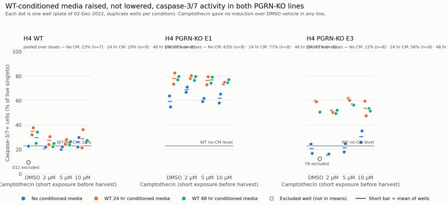
121
tool call · Bash
cd /task/work; python3 - <<'EOF'
s=open('fig.py').read()
a=s.index(" # pooled means annotation"); b=s.index(" ax.set_xticks(range(4))")
new=''' m3=[P[(P.cell_line==line)&(P.cm==cm)&(~P.index.isin(excl))].caspase_pos for cm in COL]
ax.set_title(titles[line],fontsize=13,color=INK,loc='left',pad=22)
ax.text(0,1.015,f"Mean over all doses: no CM {m3[0].mean():.0f}% · 24 hr CM {m3[1].mean():.0f}% · 48 hr CM {m3[2].mean():.0f}%",transform=ax.transAxes,fontsize=9.5,color=INK2,va='bottom')
'''
s=s[:a]+new+s[b:]
s=s.replace("axs[0].text(3.52,wtref+1.2,f'WT, no CM: {wtref:.0f}%',fontsize=9,color=INK2,ha='right',va='bottom')\nfor ax in axs[1:]: ax.text(3.52,wtref+1.2,'WT no-CM level',fontsize=9,color=INK2,ha='right',va='bottom')",
"axs[0].text(3.52,3,f'Line: WT no-CM mean ({wtref:.0f}%)',fontsize=9,color=INK2,ha='right',va='bottom')\naxs[1].text(3.52,wtref+1.2,f'WT no-CM mean ({wtref:.0f}%)',fontsize=9,color=INK2,ha='right',va='bottom')\naxs[2].text(3.52,3,f'Line: WT no-CM mean ({wtref:.0f}%)',fontsize=9,color=INK2,ha='right',va='bottom')")
s=s.replace("fig.tight_layout(rect=[0,0.06,1,0.91])","fig.subplots_adjust(left=0.06,right=0.99,top=0.80,bottom=0.19,wspace=0.06)")
s=s.replace("ax.set_xlabel('Camptothecin (short exposure before harvest)')","ax.set_xlabel('Camptothecin dose')")
s=s.replace("xytext=(-6,-14),textcoords='offset points',fontsize=8.5,color=INK2,ha='right' if i==3 else 'center')","xytext=(9,-3),textcoords='offset points',fontsize=8.5,color=INK2,ha='left')")
s=s.replace("y=0.985)","y=0.975)").replace("fig.text(0.012,0.925,","fig.text(0.012,0.905,")
open('fig.py','w').write(s)
EOF
python3 fig.py122
tool call · Read
{
"file_path": "/task/outputs/figure.png"
}123
tool output
(Bash completed with no output)
124
tool output
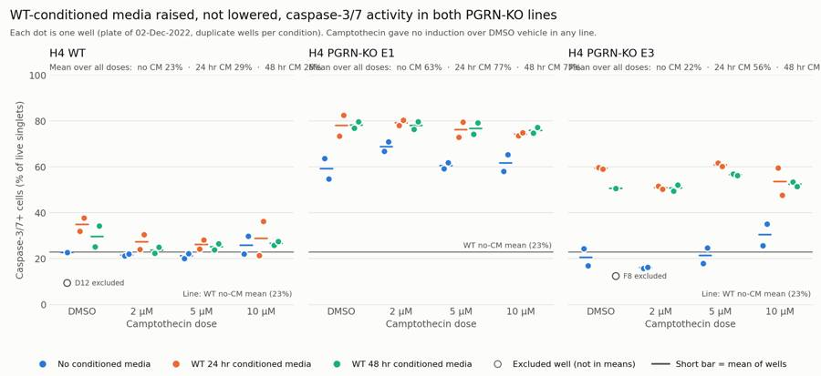
126
tool call · Bash
cd /task/work; python3 - <<'EOF'
s=open('fig.py').read()
s=s.replace('f"Mean over all doses: no CM {m3[0].mean():.0f}% · 24 hr CM {m3[1].mean():.0f}% · 48 hr CM {m3[2].mean():.0f}%"','f"Mean of all doses: no CM {m3[0].mean():.0f}% · 24 hr CM {m3[1].mean():.0f}% · 48 hr CM {m3[2].mean():.0f}%"')
s=s.replace("transform=ax.transAxes,fontsize=9.5,","transform=ax.transAxes,fontsize=9,")
s=s.replace("wspace=0.06","wspace=0.08")
open('fig.py','w').write(s)
EOF
python3 fig.py127
tool call · Read
{
"file_path": "/task/outputs/figure.png"
}128
tool output
(Bash completed with no output)
129
tool output
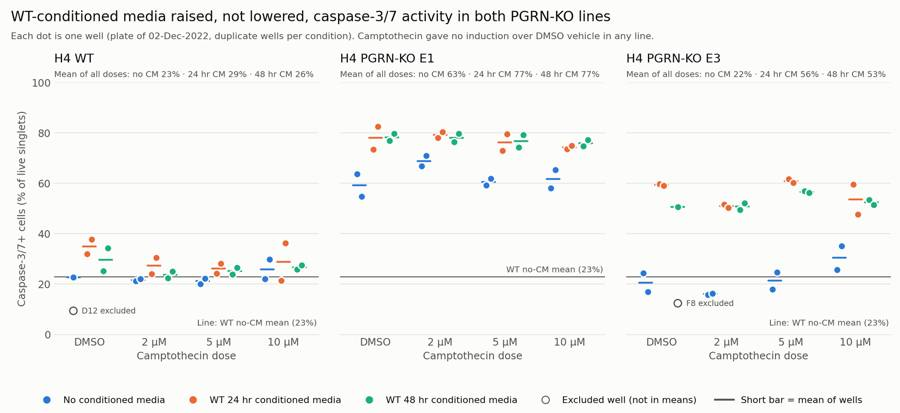
131
tool call · Bash
cd /task/work; python3 - <<'EOF'
import pandas as pd
s=pd.read_csv('sens.csv').set_index('well'); p=pd.read_csv('per_well.csv',index_col=0)
ex=['D12','F8','G3','G4','G5','G6']
s=s.join(p[['caspase_pos_all_singlets','plate']]); s=s[s.plate&~s.index.isin(ex)]
s['cmg']=s.cm.map(lambda x:'none' if x=='no cond' else 'CM')
print(s.groupby(['line','cmg'])[['pos400','pos600','pos1000','caspase_pos_all_singlets','casp_in_strict_neg','med_bl1_live','dead','n_live','cells_pct']].mean().round(1).to_string())
print(p.loc[['G1','G2','G7','G8','G3','G4','G5','G6'],['caspase_pos','sytox_bright_dead','cells','n_live','all_events']].round(1))
print(p[p.plate].groupby('cell_line')[['all_events','n_live']].agg(['min','max']))
print(p[p.plate].groupby(['cell_line','camptothecin'])[['all_events','sytox_bright_dead']].mean().round(1))
EOF132
tool output
pos400 pos600 pos1000 caspase_pos_all_singlets casp_in_strict_neg med_bl1_live dead n_live cells_pct
line cmg
E1 CM 82.4 77.1 65.3 81.0 38.6 1624.2 16.7 13734.6 68.9
none 69.9 62.6 48.2 64.8 25.7 996.7 5.9 16477.4 57.0
E3 CM 68.3 54.7 41.3 60.4 9.2 725.6 12.7 6808.8 51.9
none 34.6 22.1 12.6 27.8 4.1 295.5 7.5 8759.6 58.5
WT CM 32.3 27.8 21.6 34.9 8.6 214.5 10.2 18193.2 67.8
none 28.5 22.9 16.3 31.8 6.8 204.6 11.8 18857.9 62.8
caspase_pos sytox_bright_dead cells n_live all_events
well
G1 0.2 0.0 93.2 22185 26210
G2 3.9 5.4 91.1 19299 24654
G7 4.8 0.0 92.9 20016 24019
G8 0.3 2.4 94.2 19713 24323
G3 5.8 6.4 87.6 25851 35885
G4 6.1 6.3 87.2 25793 34209
G5 8.0 2.6 76.8 10771 15961
G6 7.4 5.1 77.5 10923 16761
all_events n_live
min max min max
cell_line
E1 15706 43387 7016 21049
E3 11614 25455 3752 11504
WT 22867 47337 12121 23333
all_events sytox_bright_dead
cell_line camptothecin
E1 10uM 23058.7 17.6
2uM 39569.5 9.5
5uM 35671.2 8.9
DMSO 23163.7 16.3
E3 10uM 16930.5 12.2
2uM 20253.5 10.1
5uM 18781.8 10.0
DMSO 16837.3 12.0
WT 10uM 33370.5 10.4
2uM 42198.5 10.3
5uM 38191.3 9.1
DMSO 28260.0 12.9134
tool call · Bash
cd /task/work; cat > answer.py <<'EOF'
import json, pandas as pd
cs=pd.read_csv('/task/outputs/condition_summary.csv').set_index('condition')
fl=pd.read_csv('/task/outputs/flags.csv')
def cmp(name,a,b,direction,conf,note=''):
ma,mb=cs.loc[a,'mean'],cs.loc[b,'mean']
mag=f"{mb-ma:+.1f} percentage points of caspase-3/7+ live cells ({ma:.1f}% -> {mb:.1f}%; n={int(cs.loc[a,'n_wells_used'])} vs {int(cs.loc[b,'n_wells_used'])} wells)"
if note: mag+='; '+note
return dict(comparison=name,a=a,b=b,direction=direction,magnitude=mag,confidence=conf)
P='all doses pooled'
comps=[
cmp('E1 KO: effect of WT-conditioned media (24hr and 48hr pooled) vs no conditioned media',f'E1 | no CM | {P}',f'E1 | WT CM 24hr+48hr | {P}','increase','high','well ranges do not overlap (54.8-71.0% vs 72.9-82.5%)'),
cmp('E3 KO: effect of WT-conditioned media (24hr and 48hr pooled) vs no conditioned media',f'E3 | no CM | {P}',f'E3 | WT CM 24hr+48hr | {P}','increase','high','well ranges do not overlap (15.9-35.2% vs 47.7-61.8%)'),
cmp('WT: effect of WT-conditioned media vs no conditioned media',f'WT | no CM | {P}',f'WT | WT CM 24hr+48hr | {P}','increase','low','small and well ranges overlap (20.2-29.8% vs 21.3-37.8%)'),
cmp('KO phenotype without conditioned media: E1 vs WT',f'WT | no CM | {P}',f'E1 | no CM | {P}','increase','high'),
cmp('KO phenotype without conditioned media: E3 vs WT',f'WT | no CM | {P}',f'E3 | no CM | {P}','no_clear_change','medium','E3 is not above WT on this plate'),
cmp('Rescue test: E1 KO with WT-conditioned media vs the WT no-conditioned-media level',f'WT | no CM | {P}',f'E1 | WT CM 24hr+48hr | {P}','increase','high','gap to WT widened from +39.7 to +54.2 points'),
cmp('Rescue test: E3 KO with WT-conditioned media vs the WT no-conditioned-media level',f'WT | no CM | {P}',f'E3 | WT CM 24hr+48hr | {P}','increase','high','E3 moved from the WT level to +31.8 points above it'),
cmp('E1 KO at vehicle only: 24hr WT-conditioned media vs no conditioned media','E1 | no CM | DMSO vehicle','E1 | WT 24hr CM | DMSO vehicle','increase','medium','duplicate wells only'),
cmp('E3 KO at vehicle only: 24hr WT-conditioned media vs no conditioned media','E3 | no CM | DMSO vehicle','E3 | WT 24hr CM | DMSO vehicle','increase','medium','duplicate wells only'),
cmp('24hr vs 48hr conditioned media in E1',f'E1 | WT 24hr CM | {P}',f'E1 | WT 48hr CM | {P}','no_clear_change','medium','24hr/48hr assignment follows the 2022-12-02 map; the 2022-11-30 map disagrees'),
cmp('24hr vs 48hr conditioned media in E3',f'E3 | WT 24hr CM | {P}',f'E3 | WT 48hr CM | {P}','no_clear_change','low','24hr/48hr assignment follows the 2022-12-02 map; the 2022-11-30 map disagrees'),
cmp('Camptothecin positive control in WT (no CM): 10uM vs DMSO vehicle','WT | no CM | DMSO vehicle','WT | no CM | CPT 10uM','no_clear_change','low','vehicle is a single well after excluding D12'),
cmp('Camptothecin positive control in E1 (no CM): 10uM vs DMSO vehicle','E1 | no CM | DMSO vehicle','E1 | no CM | CPT 10uM','no_clear_change','medium','within duplicate scatter (SD 5-6 points)'),
cmp('Camptothecin positive control in E3 (no CM): 10uM vs DMSO vehicle','E3 | no CM | DMSO vehicle','E3 | no CM | CPT 10uM','no_clear_change','low','largest apparent response on the plate but within duplicate scatter (SD 5-7 points)'),
]
ans=dict(
question="Can conditioned media from WT H4 cells (24 hr or 48 hr harvest) bring caspase-3/7 activity in H4 PGRN-KO lines E1 and E3 back toward WT levels?",
comparisons=comps,
overall_answer="no: WT-conditioned media did not move either KO line toward WT. The share of caspase-3/7+ live cells went up, not down, in E1 (62.6% -> 77.1%) and E3 (22.1% -> 54.7%), against a WT no-conditioned-media level of 22.9%; 24 hr and 48 hr media behaved alike. The plate cannot say whether progranulin or the spent medium itself caused the rise, because there is no matched mock-conditioned-media control.",
assay_verdict="needs_optimisation",
next_action="change_treatment_or_timing",
next_change=dict(
what="Rescue treatment: how progranulin is delivered to the KO cells, and its matched control",
**{"from":"Neat WT-conditioned spent medium (24 hr or 48 hr harvest, stored at 4 C for 2-3 days) left on the cells for about 29 hr, compared only against wells given no conditioned media"},
to="Progranulin at a defined dose in fresh complete medium (recombinant human PGRN titration, or WT-conditioned medium concentrated and diluted into fresh medium), run beside a matched PGRN-free mock (GRN-KO-conditioned medium handled identically), with PGRN in each medium confirmed by ELISA",
why="Conditioned media raised caspase-3/7+ cells in both KO lines (+14.5 and +32.6 points) and slightly in WT (+4.9), the opposite of rescue. Spent, nutrient-depleted medium is a likely stressor, and without a PGRN-free mock medium the effect of progranulin cannot be separated from the effect of the medium. A defined PGRN dose in fresh medium with a matched mock tests the actual hypothesis."),
excluded_wells=sorted(fl[fl.decision=='exclude'].well.tolist()),
caveats=[
"No mock-conditioned-media control (KO-conditioned or PGRN-depleted medium) and no PGRN measurement, so the rise with conditioned media cannot be attributed to progranulin rather than to spent medium.",
"Camptothecin did not induce caspase-3/7 over DMSO vehicle (WT +3.2, E1 +2.5, E3 +9.8 points at 10uM, all within duplicate scatter); exposure was at most a few hours, so the challenged arm adds no information and the assay's positive control is unproven on this plate.",
"One plate, duplicate wells per condition; the n=8 and n=16 groups pool camptothecin doses on the grounds that dose had no effect. Wells are technical replicates, not independent experiments.",
"The KO phenotype (higher caspase than WT) appeared only in E1 (62.6% vs 22.9%); E3 without conditioned media was at the WT level (22.1%).",
"The 2022-11-30 map assigns 24 hr vs 48 hr media by row (A-C vs D-F) and the 2022-12-02
… [1,210 more characters not shown]135
tool output
E1 | no CM | all doses pooled -> E1 | WT CM 24hr+48hr | all doses pooled | increase | +14.5 percentage points of caspase-3/7+ live cells (62.6% -> 77.1%; n=8 vs 16 wells); well ranges do not overlap (54.8-71.0% vs 72.9-82.5%) E3 | no CM | all doses pooled -> E3 | WT CM 24hr+48hr | all doses pooled | increase | +32.6 percentage points of caspase-3/7+ live cells (22.1% -> 54.7%; n=8 vs 15 wells); well ranges do not overlap (15.9-35.2% vs 47.7-61.8%) WT | no CM | all doses pooled -> WT | WT CM 24hr+48hr | all doses pooled | increase | +4.9 percentage points of caspase-3/7+ live cells (22.9% -> 27.8%; n=7 vs 16 wells); small and well ranges overlap (20.2-29.8% vs 21.3-37.8%) WT | no CM | all doses pooled -> E1 | no CM | all doses pooled | increase | +39.7 percentage points of caspase-3/7+ live cells (22.9% -> 62.6%; n=7 vs 8 wells) WT | no CM | all doses pooled -> E3 | no CM | all doses pooled | no_clear_change | -0.8 percentage points of caspase-3/7+ live cells (22.9% -> 22.1%; n=7 vs 8 wells); E3 is not above WT on this plate WT | no CM | all doses pooled -> E1 | WT CM 24hr+48hr | all doses pooled | increase | +54.2 percentage points of caspase-3/7+ live cells (22.9% -> 77.1%; n=7 vs 16 wells); gap to WT widened from +39.7 to +54.2 points WT | no CM | all doses pooled -> E3 | WT CM 24hr+48hr | all doses pooled | increase | +31.8 percentage points of caspase-3/7+ live cells (22.9% -> 54.7%; n=7 vs 15 wells); E3 moved from the WT level to +31.8 points above it E1 | no CM | DMSO vehicle -> E1 | WT 24hr CM | DMSO vehicle | increase | +18.8 percentage points of caspase-3/7+ live cells (59.2% -> 78.0%; n=2 vs 2 wells); duplicate wells only E3 | no CM | DMSO vehicle -> E3 | WT 24hr CM | DMSO vehicle | increase | +38.9 percentage points of caspase-3/7+ live cells (20.6% -> 59.5%; n=2 vs 2 wells); duplicate wells only E1 | WT 24hr CM | all doses pooled -> E1 | WT 48hr CM | all doses pooled | no_clear_change | +0.3 percentage points of caspase-3/7+ live cells (77.0% -> 77.3%; n=8 vs 8 wells); 24hr/48hr assignment follows the 2022-12-02 map; the 2022-11-30 map disagrees E3 | WT 24hr CM | all doses pooled -> E3 | WT 48hr CM | all doses pooled | no_clear_change | -3.3 percentage points of caspase-3/7+ live cells (56.3% -> 52.9%; n=8 vs 7 wells); 24hr/48hr assignment follows the 2022-12-02 map; the 2022-11-30 map disagrees WT | no CM | DMSO vehicle -> WT | no CM | CPT 10uM | no_clear_change | +3.2 percentage points of caspase-3/7+ live cells (22.7% -> 25.9%; n=1 vs 2 wells); vehicle is a single well after excluding D12 E1 | no CM | DMSO vehicle -> E1 | no CM | CPT 10uM | no_clear_change | +2.5 percentage points of caspase-3/7+ live cells (59.2% -> 61.7%; n=2 vs 2 wells); within duplicate scatter (SD 5-6 points) E3 | no CM | DMSO vehicle -> E3 | no CM | CPT 10uM | no_clear_change | +9.8 percentage points of caspase-3/7+ live cells (20.6% -> 30.4%; n=2 vs 2 wells); largest apparent response on the plate but within duplicate scatter (SD 5-7 points)
137
agent
answer.json is written. Writing the report now, then a final validation pass over all deliverables.
138
tool call · Write
{
"file_path": "/task/outputs/report.md",
"content": "# Caspase-3/7 conditioned-media plate, H4 WT / PGRN-KO (acquired 02-Dec-2022)\n\n## Question\n\nCan conditioned media from WT H4 cells (24 hr or 48 hr harvest) bring caspase-3/7 activity in the H4 PGRN-KO lines E1 and E3 back toward WT levels?\n\n## Methods\n\n**Data.** 80 FCS 3.1 files from the Attune NxT, wells A1-F12 and G1-G8, 11,614-47,337 events each. Sample identity follows `plate_layout.csv` (the 2022-12-02 map).\n\n**Channel assignment.** The labels stored in the files are partly stale: BL1 is labelled \"AAV-GFP\". Going by the plan's reagents and cytometer settings, the detectors measured:\n\n| Detector | Voltage | Stored label | What it measured |\n|---|---|---|---|\n| BL1-A | 225 | AAV-GFP (stale) | CellEvent Caspase-3/7 Green |\n| BL2-A | 350 | AAdvanced livedead | SYTOX AADvanced dead-cell stain |\n\n**Compensation.** The spillover matrix in the files is the identity, so nothing was compensated at acquisition. The single-stain wells show that this matters: in G7 (caspase stain only) the caspase dye appears in BL2 at 0.89 of its BL1 signal (560 positive events), while in G8 (SYTOX only) SYTOX appears in BL1 at 0.0004. I added a matrix with these two coefficients (`comp_G7_G8`) and used it for every fluorescence gate.\n\n**Gates** (one strategy for all wells, saved in `gates.xml`; counts are FlowKit counts from the reloaded file):\n\n| Population | Role | Parent | Gate |\n|---|---|---|---|\n| `time_ok` | other | all_events | Time 0-15 s; drops the end-of-draw tail where the event rate collapses |\n| `cells` | cells | time_ok | FSC-A / SSC-A polygon; excludes debris, the low-SSC streak and off-scale events (>= 1.04e6) |\n| `singlets` | singlets | cells | FSC-A / FSC-H polygon |\n| `live` | live | singlets | Compensated BL1 x BL2 polygon (logicle axes) below the SYTOX-bright cluster: BL2 < 2.5e4, rising with BL1 above 2e3 |\n| `caspase_pos` | marker_positive | live | Compensated BL1-A >= 600 |\n| `sytox_bright_dead` | other | singlets | Complement of `live` on the SYTOX axis |\n| `caspase_pos_all_singlets` | other | singlets | Compensated BL1-A >= 600, regardless of SYTOX |\n\nThe BL1 threshold of 600 sits in the valley between the negative and positive peaks (about 600 in WT, 400-500 in E1, 700-800 in E3). It leaves 0.3% of live cells positive in the SYTOX-only well G8 and 0.2% in the unstained well G1.\n\n\"Live\" here means not SYTOX-bright. Caspase-positive cells on this plate are SYTOX-dim (about 1e4 against 1e5 for dead cells), so a strict SYTOX-negative gate would remove most of the population the assay is meant to read.\n\n**Read-out.** Per well: 100 x `caspase_pos` / `live`, in % of live singlet cells. No normalisation.\n\n**Conditions.** Each cell line x conditioned media x camptothecin dose has duplicate wells. Because camptothecin had no effect (see Results), I also pooled the four dose levels to get 8 wells per line x media group and 16 for 24 hr + 48 hr media combined. p-values are Welch t-tests across wells; the wells are technical replicates on one plate.\n\n**Exclusions** (6 wells, details in `flags.csv`): G3, G4, G5, G6 (cell-line label contradicted by scatter) and D12, F8 (vehicle controls discordant with their replicates).\n\n## Results\n\n**Conditioned media raised caspase-3/7+ cells in both KO lines.** Means are % caspase-3/7+ of live cells, pooled over camptothecin doses, with SD and number of wells.\n\n| Line | No CM | WT 24 hr CM | WT 48 hr CM | CM pooled | CM minus no CM |\n|---|---|---|---|---|---|\n| WT | 22.9 \u00b1 3.2 (7) | 29.3 \u00b1 6.0 (8) | 26.3 \u00b1 3.6 (8) | 27.8 \u00b1 5.0 (16) | +4.9 (p = 0.011) |\n| E1 KO | 62.6 \u00b1 5.2 (8) | 77.0 \u00b1 3.7 (8) | 77.3 \u00b1 2.1 (8) | 77.1 \u00b1 2.9 (16) | +14.5 (p = 4e-5) |\n| E3 KO | 22.1 \u00b1 6.7 (8) | 56.3 \u00b1 5.5 (8) | 52.9 \u00b1 2.8 (7) | 54.7 \u00b1 4.6 (15) | +32.6 (p = 1e-7) |\n\n- In E1 and E3 the well ranges with and without conditioned media do not overlap (E1 54.8-71.0% vs 72.9-82.5%; E3 15.9-35.2% vs 47.7-61.8%). The increase is present at every dose, including vehicle only (E1 59.2% to 78.0%, E3 20.6% to 59.5% with 24 hr media).\n- The distance from the WT no-CM level (22.9%) grew: E1 went from +39.7 to +54.2 points, E3 from -0.8 to +31.8 points.\n- Conditioned media also raised the SYTOX-bright dead fraction in the KO lines (E1 5.9% to 16.7% of singlets; E3 7.5% to 12.7%) but not in WT (11.8% to 10.2%).\n- 24 hr and 48 hr media were indistinguishable (E1 +0.3 points, E3 -3.3 points, WT -3.0 points; all p > 0.15).\n\n**KO phenotype without conditioned media.** E1 was well above WT (62.6% vs 22.9%). E3 was not (22.1%).\n\n**Camptothecin did not work as a positive control.** At 10 uM versus DMSO vehicle, without conditioned media: WT 22.7% to 25.9%, E1 59.2% to 61.7%, E3 20.6% to 30.5%. All are within duplicate scatter (SD 5-7 points) and there is no dose trend in WT or E1. The plan does not state the exposure time; from the timings it was at most about 4-5 hours (conditioned media on at 9 AM on 01-Dec, camptothecin \"after 24 hours\", acquisition from 14:33 on 02-Dec).\n\n**Vehicle and handling background is high.** The untreated, stained WT well G2 has 3.9% caspase-3/7+ cells; WT vehicle wells without conditioned media have about 23%. DMSO wells also lost as many cells as 10 uM camptothecin wells (mean events per well in E1: DMSO 23,164, 10 uM 23,059, 5 uM 35,671, 2 uM 39,570), which points at the vehicle rather than the drug.\n\n**Controls.** Unstained G1: 0.2% caspase+, 0% SYTOX-bright. Caspase-only G7: 4.8% caspase+. SYTOX-only G8: 0.3% caspase+, 2.4% SYTOX-bright. These behave as expected.\n\n**Robustness.** The directions above hold at BL1 thresholds of 400 and 1000, when caspase+ is counted in all singlets instead of live cells, and when only strictly SYTOX-negative cells (BL2 < 3e3) are counted:\n\n| Line, media | Threshold 400 | Threshold 600 (reported) | Threshold 1000 | All singlets | Strict SYTOX-negative |\n|-
… [5,702 more characters not shown]139
tool output
File created successfully at: /task/outputs/report.md (file state is current in your context — no need to Read it back)
140
tool call · Bash
cd /task/work; python3 - <<'EOF' 2>&1 | grep -v -i warn
import flowkit as fk, pandas as pd, json, numpy as np, re, warnings
warnings.filterwarnings('ignore')
O='/task/outputs/'
g=fk.parse_gating_xml(O+'gates.xml'); print(g.get_gate_ids())
c=pd.read_csv(O+'counts.csv'); print(list(c.columns), len(c), c.file.nunique(), c.groupby('file').population.nunique().unique())
assert list(c.columns)==['file','well','population','role','parent','count','pct_of_parent']
print(c.groupby('role').population.unique())
# recompute counts for 5 random files from reloaded gates and compare
lay=pd.read_csv('/task/inputs/plate_layout.csv')
for r in lay.sample(6,random_state=1).itertuples():
s=fk.Sample('/task/inputs/raw/'+r.file); rep=g.gate_sample(s).report.set_index('gate_name')['count']
sub=c[(c.file==r.file)&(c.population!='all_events')].set_index('population')['count']
assert all(int(rep[p])==int(sub[p]) for p in sub.index), r.well
assert int(c[(c.file==r.file)&(c.population=='all_events')]['count'].iloc[0])==s.event_count
# pct check
m=c.merge(c[['file','population','count']].rename(columns={'population':'parent','count':'pc'}),on=['file','parent'],how='left')
ok=m[m.population!='all_events']; print('pct max err',(ok.pct_of_parent-100*ok['count']/ok.pc).abs().max()); print('all_events pct empty:',c[c.population=='all_events'].pct_of_parent.isna().all())
f=pd.read_csv(O+'flags.csv',keep_default_na=False); print(list(f.columns),len(f),f.well.nunique())
assert set(f.issue_type)<= {'none','clog','ran_dry','too_few_events','saturation','bad_control','mislabel','other'}
assert (f[f.issue_type=='none'].decision=='keep').all()
assert all(re.search(r'\d',e) for e in f[f.issue_type!='none'].evidence)
cs=pd.read_csv(O+'condition_summary.csv',keep_default_na=False); print(list(cs.columns),len(cs))
a=json.load(open(O+'answer.json'))
conds=set(cs.condition)
assert all(x['a'] in conds and x['b'] in conds for x in a['comparisons'])
assert sorted(a['excluded_wells'])==sorted(f[f.decision=='exclude'].well)
# no excluded wells in summary; n matches
for r in cs.itertuples():
w=r.wells.split(';'); assert len(w)==r.n_wells_used and not set(w)&set(a['excluded_wells'])
print(a['overall_answer'][:60], a['assay_verdict'], a['next_action'])
print(open(O+'gates.xml').read()[:1500])
import os; print(os.listdir(O))
EOF141
tool output
[('time_ok', ('root',)), ('cells', ('root', 'time_ok')), ('singlets', ('root', 'time_ok', 'cells')), ('caspase_pos_all_singlets', ('root', 'time_ok', 'cells', 'singlets')), ('live', ('root', 'time_ok', 'cells', 'singlets')), ('caspase_pos', ('root', 'time_ok', 'cells', 'singlets', 'live')), ('sytox_bright_dead', ('root', 'time_ok', 'cells', 'singlets'))]
['file', 'well', 'population', 'role', 'parent', 'count', 'pct_of_parent'] 640 80 [8]
role
cells [cells]
live [live]
marker_positive [caspase_pos]
other [all_events, time_ok, sytox_bright_dead, caspa...
singlets [singlets]
Name: population, dtype: object
pct max err 4.991945587562441e-05
all_events pct empty: True
['file', 'well', 'issue_type', 'evidence', 'decision'] 80 80
['condition', 'wells', 'n_wells_used', 'mean', 'sd', 'metric_definition', 'normalisation_applied'] 52
no: WT-conditioned media did not move either KO line toward needs_optimisation change_treatment_or_timing
<?xml version='1.0' encoding='UTF-8'?>
<gating:Gating-ML xmlns:gating="http://www.isac-net.org/std/Gating-ML/v2.0/gating" xmlns:data-type="http://www.isac-net.org/std/Gating-ML/v2.0/datatypes" xmlns:transforms="http://www.isac-net.org/std/Gating-ML/v2.0/transformations">
<transforms:transformation transforms:id="logicle">
<transforms:logicle transforms:T="1048576" transforms:W="1.0" transforms:M="4.5" transforms:A="0"/>
</transforms:transformation>
<transforms:spectrumMatrix transforms:id="comp_G7_G8">
<transforms:fluorochromes>
<data-type:fcs-dimension data-type:name="CellEvent_Casp37_Green"/>
<data-type:fcs-dimension data-type:name="SYTOX_AADvanced"/>
</transforms:fluorochromes>
<transforms:detectors>
<data-type:fcs-dimension data-type:name="BL1-A"/>
<data-type:fcs-dimension data-type:name="BL2-A"/>
</transforms:detectors>
<transforms:spectrum>
<transforms:coefficient transforms:value="1.0"/>
<transforms:coefficient transforms:value="0.89"/>
</transforms:spectrum>
<transforms:spectrum>
<transforms:coefficient transforms:value="0.0004"/>
<transforms:coefficient transforms:value="1.0"/>
</transforms:spectrum>
</transforms:spectrumMatrix>
<gating:RectangleGate gating:id="time_ok">
<gating:dimension gating:compensation-ref="uncompensated" gating:min="0.0" gating:max="15.0">
<data-type:fcs-dimension data-type:name="Time"/>
</gating:dimension>
</gating:RectangleGate>
<g
['report.md', 'flags.csv', 'answer.json', 'condition_summary.csv', 'counts.csv', 'figure.png', 'gates.xml']143
tool call · Bash
cd /task/work; sed -i 's/E3 20.6% to 30.5%/E3 20.6% to 30.4%/' /task/outputs/report.md; python3 - <<'EOF' 2>&1 | grep -v -i warn
import flowkit as fk, numpy as np, pandas as pd, warnings
from matplotlib.path import Path
warnings.filterwarnings('ignore')
g=fk.parse_gating_xml('/task/outputs/gates.xml')
lgl=fk.transforms.LogicleTransform(param_t=1048576,param_w=1.0,param_m=4.5,param_a=0)
Si=np.linalg.inv(np.array([[1,0.89],[0.0004,1]]))
for w in ['B4','G7','C9']:
s=fk.Sample(f'/task/inputs/raw/Caspase-assay-2-mlk_caspase_Group_{w}.fcs'); res=g.gate_sample(s)
ev=s.get_events('raw'); lab=s.pnn_labels
sing=res.get_gate_membership('singlets')
cc=ev[:,[lab.index('BL1-A'),lab.index('BL2-A')]]@Si
live_gate=g.get_gate('live'); verts=np.array(live_gate.vertices)
tx=np.column_stack([lgl.apply(cc[:,0]),lgl.apply(cc[:,1])])
mine=Path(verts).contains_points(tx)&sing
print(w,'flowkit live',res.get_gate_membership('live').sum(),'numpy live',mine.sum(),'| casp fk',res.get_gate_membership('caspase_pos').sum(),'numpy',(mine&(cc[:,0]>=600)).sum(), '| uncompensated numpy live',(Path(verts).contains_points(np.column_stack([lgl.apply(ev[:,lab.index('BL1-A')]),lgl.apply(ev[:,lab.index('BL2-A')])]))&sing).sum())
EOF
head -3 /task/outputs/flags.csv | cut -c1-400; grep -n "G3\|D12\|A9" /task/outputs/flags.csv | cut -c1-700144
tool output
B4 flowkit live 8965 numpy live 8965 | casp fk 6589 numpy 6589 | uncompensated numpy live 8918 G7 flowkit live 20016 numpy live 20016 | casp fk 953 numpy 953 | uncompensated numpy live 20016 C9 flowkit live 10859 numpy live 10859 | casp fk 2792 numpy 2792 | uncompensated numpy live 10824 file,well,issue_type,evidence,decision Caspase-assay-2-mlk_caspase_Group_A1.fcs,A1,none,,keep Caspase-assay-2-mlk_caspase_Group_A2.fcs,A2,none,,keep 10:Caspase-assay-2-mlk_caspase_Group_A9.fcs,A9,bad_control,"Camptothecin 10uM positive control gave no induction: caspase+ of live 22.1% vs 22.7% in the WT DMSO no-CM vehicle well(s) (difference -0.6 points). Well itself acquired normally (40034 events, 17924 live singlets).",keep_with_note 49:Caspase-assay-2-mlk_caspase_Group_D12.fcs,D12,bad_control,"Vehicle (DMSO) control of the WT no-CM arm is discordant: caspase+ of live 9.4% vs 22.7% in its replicate A12 and 20.2-29.8% in the other 7 WT no-CM wells; cells gate 79.2% of events vs 58.3-66.5% (less debris, closer to the untreated well G2 at 91.1%). Looks like a well that did not receive the same handling/vehicle.",exclude 76:Caspase-assay-2-mlk_caspase_Group_G3.fcs,G3,mislabel,"Labelled E3 but scatter does not match E3: 1.4% of cell-sized events off-scale on FSC-A/SSC-A (E3 plate wells 6.8-13.0%; E1 0.3-2.2%; WT 1.2-3.0%), median SSC-A 209k (E3 315-487k; E1 172-221k). Looks like E1 or WT; likely swapped with G5/G6 (the 2022-11-30 and 2022-12-02 maps also place the untreated KO wells differently). Caspase+ of live 5.8%. Identity cannot be confirmed, so not used.",exclude 78:Caspase-assay-2-mlk_caspase_Group_G5.fcs,G5,mislabel,"Labelled E1 but scatter matches E3: 9.1% of cell-sized events off-scale (E3 plate wells 6.8-13.0%; E1 0.3-2.2%), median FSC-A 476k and SSC-A 343k (E3 422-518k / 315-487k; E1 325-367k / 172-221k). Likely swapped with G3/G4. Caspase+ of live 8.0%. Also off-scale scatter >5%. Not used.",exclude 79:Caspase-assay-2-mlk_caspase_Group_G6.fcs,G6,mislabel,"Labelled E1 but scatter matches E3: 10.8% of cell-sized events off-scale (E3 plate wells 6.8-13.0%; E1 0.3-2.2%), median FSC-A 483k and SSC-A 352k (E3 422-518k / 315-487k; E1 325-367k / 172-221k). Likely swapped with G3/G4. Caspase+ of live 7.4%. Also off-scale scatter >5%. Not used.",exclude [This command modified 1 file you've previously read: ../outputs/report.md. Call Read before editing.]
146
agent
The analysis is complete: the answer to the plan's question is **no**. WT-conditioned media raised caspase-3/7+ cells in both KO lines instead of bringing them toward WT.
| Line | No conditioned media | WT-conditioned media (24 hr + 48 hr) | Change |
|---|---|---|---|
| WT | 22.9% (7 wells) | 27.8% (16 wells) | +4.9 points |
| E1 KO | 62.6% (8 wells) | 77.1% (16 wells) | +14.5 points |
| E3 KO | 22.1% (8 wells) | 54.7% (15 wells) | +32.6 points |
Values are % caspase-3/7+ of live singlet cells, pooled over camptothecin doses.
- **Rescue:** in both KO lines the well ranges with and without conditioned media do not overlap, and 24 hr and 48 hr media behaved alike.
- **Interpretation limit:** the plate has no PGRN-free mock medium, so the rise could be spent-medium stress and not progranulin. The rescue hypothesis has not been tested cleanly.
- **Camptothecin did not work as a positive control:** 10 µM gave no induction over DMSO in any line (WT +3.2, E1 +2.5, E3 +9.8 points, all within duplicate scatter). I pooled doses on that basis.
- **KO phenotype:** only E1 sits above WT without conditioned media; E3 is at the WT level.
- **Verdict and next step:** assay `needs_optimisation`; next action `change_treatment_or_timing`. Deliver progranulin at a defined dose in fresh medium with a matched PGRN-free mock, and extend camptothecin to an overnight exposure in the same run.
Analysis choices that affect the numbers:
- **Channels:** BL1 carries a stale "AAV-GFP" label; I treated it as the caspase dye and BL2 as SYTOX AADvanced, per the plan.
- **Compensation:** the files carry no compensation, and the caspase dye spills into BL2 at 0.89 of its BL1 signal. I added a matrix measured from the single-stain wells G7 and G8.
- **"Live" definition:** caspase-positive cells here are SYTOX-dim, so "live" means not SYTOX-bright. Absolute percentages shift with the caspase threshold, but every direction above holds at thresholds of 400, 600 and 1000.
- **Excluded wells (6):**
- G3–G6: the cell-line labels are contradicted by scatter. G5/G6, labelled E1, look like E3; G3/G4, labelled E3, do not.
- D12 and F8: vehicle controls that read far from their replicates (9.4% vs 22.7%, and 12.4% vs 50.7%). Including them moves WT no-media to 21.2% and E3 with media to 52.1%.
- **Flagged but kept (27):**
- 23 E3 wells have 6.8–13.0% of cell-sized events off-scale on FSC/SSC.
- 4 camptothecin 10 µM wells (A9, D9, B9, E9) are marked as failed positive controls.
- **Plate-map conflict:** the 30-Nov and 02-Dec maps disagree on which wells got 24 hr vs 48 hr media. I followed the 02-Dec map as in `plate_layout.csv`; the media vs no-media comparison is the same under both.
Files are in `/task/outputs/`:
- `report.md`
- `answer.json`
- `figure.png`
- `condition_summary.csv`
- `flags.csv`
- `counts.csv`
- `gates.xml`
final result
The analysis is complete: the answer to the plan's question is **no**. WT-conditioned media raised caspase-3/7+ cells in both KO lines instead of bringing them toward WT. | Line | No conditioned media | WT-conditioned media (24 hr + 48 hr) | Change | |---|---|---|---| | WT | 22.9% (7 wells) | 27.8% (16 wells) | +4.9 points | | E1 KO | 62.6% (8 wells) | 77.1% (16 wells) | +14.5 points | | E3 KO | 22.1% (8 wells) | 54.7% (15 wells) | +32.6 points | Values are % caspase-3/7+ of live singlet cells, pooled over camptothecin doses. - **Rescue:** in both KO lines the well ranges with and without conditioned media do not overlap, and 24 hr and 48 hr media behaved alike. - **Interpretation limit:** the plate has no PGRN-free mock medium, so the rise could be spent-medium stress and not progranulin. The rescue hypothesis has not been tested cleanly. - **Camptothecin did not work as a positive control:** 10 µM gave no induction over DMSO in any line (WT +3.2, E1 +2.5, E3 +9.8 points, all within duplicate scatter). I pooled doses on that basis. - **KO phenotype:** only E1 sits above WT without conditioned media; E3 is at the WT level. - **Verdict and next step:** assay `needs_optimisation`; next action `change_treatment_or_timing`. Deliver progranulin at a defined dose in fresh medium with a matched PGRN-free mock, and extend camptothecin to an overnight exposure in the same run. Analysis choices that affect the numbers: - **Channels:** BL1 carries a stale "AAV-GFP" label; I treated it as the caspase dye and BL2 as SYTOX AADvanced, per the plan. - **Compensation:** the files carry no compensation, and the caspase dye spills into BL2 at 0.89 of its BL1 signal. I added a matrix measured from the single-stain wells G7 and G8. - **"Live" definition:** caspase-positive cells here are SYTOX-dim, so "live" means not SYTOX-bright. Absolute percentages shift with the caspase threshold, but every direction above holds at thresholds of 400, 600 and 1000. - **Excluded wells (6):** - G3–G6: the cell-line labels are contradicted by scatter. G5/G6, labelled E1, look like E3; G3/G4, labelled E3, do not. - D12 and F8: vehicle controls that read far from their replicates (9.4% vs 22.7%, and 12.4% vs 50.7%). Including them moves WT no-media to 21.2% and E3 with media to 52.1%. - **Flagged but kept (27):** - 23 E3 wells have 6.8–13.0% of cell-sized events off-scale on FSC/SSC. - 4 camptothecin 10 µM wells (A9, D9, B9, E9) are marked as failed positive controls. - **Plate-map conflict:** the 30-Nov and 02-Dec maps disagree on which wells got 24 hr vs 48 hr media. I followed the 02-Dec map as in `plate_layout.csv`; the media vs no-media comparison is the same under both. Files are in `/task/outputs/`: - `report.md` - `answer.json` - `figure.png` - `condition_summary.csv` - `flags.csv` - `counts.csv` - `gates.xml`